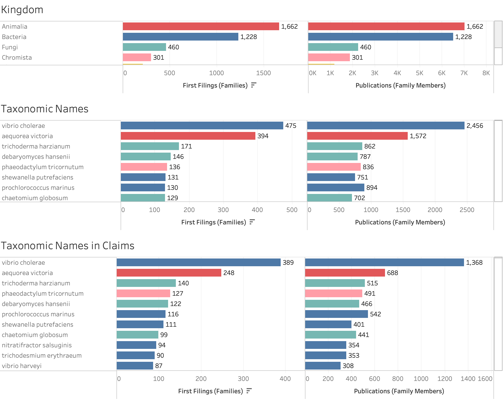

4 Patent Activity For Marine Genetic Resources
Introduction
Patent activity for marine genetic resources was an important focus of debate during the negotiation of the BBNJ Treaty. In the economics and science policy literature, patent data is important because it provides a proxy indicator for underlying investments in research and development that is otherwise invisible. That is, trends in patent activity serve as a proxy output indicator for trends in research and development. As such, patent data provides an indicator for whether a particular area of technology is currently an important focus of investment in research and development or not.
Patent data can be counted in a variety of ways in order to provide different insights into areas of activity:
The first time a patent application is filed anywhere in the world is known as a “priority” or “first” filing. Because the date of a priority or first filing is the closest to the date of the underlying investment in research and development this is the most commonly used count for patent activity in the economics literature and is widely used for statistical purposes by organisations such as the OECD, Eurostat and patent offices. However, its use as an indicator suffers from the lag time between the date of first filing and publication (typically at least two years) meaning that patent data always lags behind actual activity. As such, patent activity describes historic activity. We use INPADOC patent families, as contained in the EPO World Patent Statistical Database (PATSTAT, spring edition 2024) as the basis for the counts in this section.1
Counts of patent families. A first filing in a single country may lead to multiple follow on publications and filings in the form of applicants and grants in the same country or in other countries. These later filings and any grants that arise from them are called ‘family members’ of the original or priority first filing. The publication and republication of the same document in multiple countries and multiple languages leads to large scale duplication in patent data. The growing globalisation of patent protection through international instruments such as the Patent Cooperation Treaty and the regional European Patent Convention has accelerated this trend. Under the Patent Cooperation Treaty an applicant can submit an application for potential consideration in multiple countries. However, there is no ‘global patent’ and applicants must pay for each stage of the procedure as an application moves towards becoming a potential patent grant in each country where an application is filed. Because applicants have to pay at various stages, patent family information provides an indicator of demand, in the form of willingness to pay, on the part of the applicants. As such, it provides an indicator of the importance of a claimed invention or set of claimed inventions to applicants. We use INPADOC patent families, as contained in the EPO World Patent Statistical Database (PATSTAT, spring edition 2024) as the basis for the counts of worldwide patent family members.
It is important to emphasise that different counts of patent data reveal different insights and it is also important to be careful in the use of language around the term ‘patent’ in order to avoid accidentally misleading the reader. In the following analysis the term patent document is used throughout. The term ‘patent grant’ is only used where a granted patent is known to exist and will always refer to a specific jurisdiction.
In the analysis to follow, we focus mainly on two indicators:
trends in first filings involving marine genetic resources using INPADOC patent families;
trends in demand for patent protection involving marine genetic resources through counts of INPADOC patent family members.
The Patent Data
We used the ABSPAT patent index developed by One World Analytics as the basis for the analysis. The ABSPAT index is an index of biodiversity relevant entities, consisting of taxonomic names, common names, virus names, habitats, country and place names that appear in the full text of the patent documents from the European Patent Office (EPO), the United States Patent and Trademark Office (USPTO) and the Patent Cooperation Treaty published between 1976 and the present (currently, to the end of December 2023). These offices are major drivers of the global patent system and patent applicants will typically file in multiple countries for inventions that are economically important to them. The focus on these three offices is intended to capture claimed inventions that are internationally important. For example, in focusing on the United States approximately 40% of patent filings with the USPTO originate from applicants outside the United States. In Europe, the European Patent Convention is the key vehicle for securing protection across its 39 member states. The Patent Cooperation Treaty (PCT) is administered by WIPO and is the main vehicle for the pursuit of patent protection worldwide. This approach is not intended to capture patent activity for purely domestic markets (e.g.not pursued in other markets outside the home market). The approach is similar to that pioneered by the OECD in focusing its statistical indicators on the US, the EPC and Japan (known as the Trilateral Offices) with the exception that biodiversity based analysis is dependent on access to the full texts of patent documents.2 At the time of writing, the ABSPAT index contained 1.4 million biodiversity related first filings of patent applications linked to 10.9 million patent family members worldwide.
As discussed in detail in the 2019 WIPO Patent Landscape Report on Marine Genetic Resources, our ability to conduct analysis across all countries worldwide is heavily constrained by access to national collections in public or private databases.3 For example, the patent collections for India and ASEAN countries are only partially accessible and are under-represented in statistical databases such as the EPO World Patent Statistical Database (PATSTAT). As such, it is important to recognise the constraints imposed by lack of access to national patent collections for patent analysis. In addition, the diversity of languages that may be used within the global patent system is also a limiting factor. However, while noting these data constraints, the ability to map patent families worldwide using PATSTAT provides important opportunities to understand trends in global demand across countries for marine genetic resources and those from ABNJ. Readers interested in gaining an in depth understanding of the methods used in this study should consult the second edition of the WIPO Manual on Open Source Patent Analytics for beginners and the WIPO Patent Analytics Handbook for intermediate and advanced users.
For the purpose of consistency, the same basic methodology is applied to the patent data as for the scientific literature considered in the previous section. In this case the available full texts of patent documents relevant to biodiversity, consisting of the titles, abstracts, descriptions and claims are broken down into individual sentences and processed using the Humboldt Named Entity Recognition model. Patent full texts are sourced using the Lens patent API from the non-profit CAMBIA in Australia. The results of the text analysis are joined to the EPO Patent Statistical Database (PATSTAT) as the international gold standard for patent statistics. The results are also federated with other datasets, notably the taxonomic backbone of the Global Biodiversity Information Facility (GBIF) and OBIS, and filtered down to marine organisms. The use of sentence level analysis allows for fine grained analysis of the presence of marine resources in conjunction with other information, such as known underwater features and locations.
General Overview
As noted in the discussion of the scientific literature, an organism recorded in the marine environment may also be recorded in other environments. This has a major impact on the analysis of patent data because patent documents involving biodiversity frequently if not normally make reference to multiple species which may come from a range of environments. The challenge, as we will see, is to filter the data to those documents involving marine environments and then to focus further on patent activity originating from organisms in the high seas where an organism is the focus of the patent claims.
In order to introduce the reader to the issues involved in patent data, we will begin with a general overview of patent activity involving any binomial species name that is classified in OBIS as appearing in a marine environment, including model organisms, as set out in Figure 45. In total, we identified 4,903 binomial taxonomic names in the OBIS marine group in patent data from 1891 to 2023 (available data to date in PATSTAT Spring 2024). For greater clarity in the presentation of data on applicants, we exclude the names of individual persons and focus on organisations.4
Figure 45: A summary overview of first filings of INPADOC patent families at the USPTO, the European Patent Office and the Patent Cooperation Treaty that mention marine organisms (including model organisms). (Applicants data excludes individuals).
These organisms were associated with a total of 53,768 first filings (INPADOC patent families) between 1990 and 2021. Trends in first filings display an overall rising trend across this period before encountering a data cliff due to the lag times between the filing of an application and its publication (at least 24 months). This illustrates a major issue with patent data in the form of timeliness. In short, we are always observing historic activity with recent activity hidden from view due to lag times between filing and publication. In observing trends in first filings note that patent data for first filings always displays a data cliff at least three/four years prior to the present date and this should not be interpreted as representing a decline in activity.
Figure 45 reveals that the top area of activity involving marine organisms is biotechnology and genetic engineering, pharmaceuticals followed by peptides, plant agriculture in the form of ‘new plants’ involving genetic engineering along with fermentation and measuring and testing processes, biocides, foods and cosmetics are lower down the list. The top applicants involve large agricultural companies, enzyme producing companies such as Novozymes (now Novonesis), universities that are heavily active in filing for patents such as the University of California system, Harvard and MIT, companies such as MS Technologies LLC involved in sensor technologies chemical companies such as Dupont and personal care companies such as Proctor and Gamble.
Figure 45 also provides an insight into the countries where patent applications involving marine organisms are filed for the first time. Figure 45 reveals the dominance of filings in the United States, the European Patent Office and the Patent Cooperation Treaty. This is followed by China and Japan and a mix of developed and developing countries with the latter dominated by BRICS countries.5 It is important to note that countries such as China are playing an increasing role in the international patent landscape as we can clearly see in Figure 45 and are increasingly overtaking more established users of the patent system. In considering Figure 45 note that while filings will normally display a bias towards home nationals, in major markets such as the United States over 50% of filings may originate from non-residents.[^patents-6] As such the statistics will in part display the choices made by applicants on where to file first.
Figure 45 focuses on activity measured by first filings of patent applications anywhere in the world. However, as noted above, a single patent filing may go on to be published as an application and grant multiple times in the same country or in other countries that participate in regional or international instruments (notably the Patent Cooperation Treaty administered by WIPO). Later patent applications and grants that link to an original first filing as their parent are called ‘family members’6. Figure 46 shows global patent activity for these family members and consists of follow on applications and grants involving marine organisms of any kind.

Figure 46: A summary overview of global patent family members consisting of applications and grants involving marine organisms (including model organisms). (Applicants data excludes individuals).
In comparing Figure 46 with Figure 45 we can immediately detect a change of scale, notably in the graph displaying trends. This reflects the radical multiplier effects created by international patent instruments such as the Patent Cooperation Treaty and regional instruments such as the European Patent Convention. Under the Patent Cooperation Treaty an applicant can submit a single application which is then transmitted to multiple patent offices of their choice. The application will then be republished as an application in that country and, where relevant, may be republished as a patent grant. This change of scale can also clearly be seen in the ranked data for patent family countries and in this case refers to the countries, as markets, where protection is being sought.
These multiplier effects arise from the submission of applications that go on to be republished as applications and possible grants in multiple other countries. In considering Figure 46 we can also detect the emerging importance of BRICS countries with China and Brazil particularly apparent, followed by South Africa. Access to patent data is limited for countries such as India and regions such as South East Asia and activity for some countries and regions will therefore be under-represented in PATSTAT due to a lack of access to data.
Trends in patent family members are mapped based on publication year and will typically display a smoother line than activity measured by first filings. Counts of patent family data also ‘lean forward’ compared with filing data because filing trends are counted by the earliest filing date while patent family members are counted by their publication date (which will be two years or more later). As a consequence, the data cliff represented by a lack of complete publication data will also appear roughly two years prior to the present. Again, this data cliff should not be interpreted as a decline in activity. Blips in activity or longer term trends typically only become fully visible some years after the event.
Finally in considering Figure 46 the rankings by applicants reveal higher overall scores encompassing both applications, grants and amendments to patent documents. More importantly, this data will reflect the strategies developed by applicants in pursuing patent protection in different markets around the world. That is, we can see how important the pursuit of patent protection in multiple markets is to individual organisations and companies.
An important purpose of this overview is to introduce different ways of counting patent data and outline some of the issues involved in counting data for marine organisms and ABNJ in particular. These issues come into sharper focus when we consider the data on the taxonomy of the organisms inside the patent documents in Figure 47. Figure 47 displays the counts of first filings (patent families), applications and publications (family members) to show how follow on filings and republications of patent applications in multiple countries dramatically increases the scale of the counts. Thus, for fungi, 42,792 first filings led to 201,764 applications which in turn resulted in the 278,382 publications of applications and grants around the world.

Figure 47: Rankings first filings of patent applications involving marine organisms from OBIS.
In considering Figure 47 we are immediately struck by the prominence of fungi in the patent data, whereas we might ordinarily associate the marine environment with animals (Animalia), plants (Plantae) and bacteria. The presence of widespread and widely used fungi such as Saccharomyces cerevisiae and Aspergillus niger, Aspergillus fumigatus and plants such as Beta vulgaris (common beetroot) and Beta vulgaris maritima (sea beet) suggesting that something may be amiss with the data. It is only as we move further down the list towards Cocos nucifera (coconut) and the bioluminescent jellyfish Aequorea victoria that we move into more obviously marine territory. An issue here is the widespread use of organisms as research tools, such as S. cerevisiae, and the ubiquity of some organisms across environments making it difficult to clearly distinguish organisms by environment.
A second introductory issue when working with patent data is that we are focusing here on patent documents that mention marine organisms somewhere in the text. Patent activity involving biodiversity commonly, and indeed normally, makes reference to multiple species that may be found in multiple environments.
A third introductory issue is that species that appear in patent documents may or may not be part of, or material to, the claimed invention. That is, in the language of the new WIPO Treaty on Intellectual Property, Genetic Resources and Associated Traditional Knowledge, a claimed invention may not be based on the organism referenced in the document. We can draw closer to the analysis of patent activity specifically focused on marine organisms by identifying marine organisms that appear in the patent claims, as illustrated in the lower panel of Figure 47
In interpreting the data on the appearance of taxonomic names in patent we can immediately observe that the appearance of a marine organism in the claims section normally occurs at a much lower frequency than in the overall patent data. In other words, an organisms will be mentioned in a patent document much more commonly than it appears in the claims. However, it is important also to emphasise that patent claims are commonly constructed at the level of the genus, family or class of organism in order to maximise the scope of protection for the claimed invention. For example, it is common place to see references to ‘mammals’ in patent claims in order to broadly encompass a class of organism or family or genus names. This can make it challenging to interpret whether a claimed invention involves or is based on a specific named marine organism.
Our purpose in this section has been to introduce a reader new to patent statistics for biodiversity and marine organisms to some of the issues that are involved in constructing and interpreting patent counts. Using this basic guide, our aim is to progressively narrow the scope of analysis to organisms from BBNJ in a transparent way.
Marine Organisms
Following a similar approach to that used for the scientific literature, we can use OBIS data to impose a set of filters on the patent data. Figure 48 displays the results of filtering the data onto taxonomic names that are only recorded in a marine environment according to the available data in OBIS (the ‘marine only’ grouping used in the analysis of the scientific literature). The data is also filtered to exclude model organisms.

Figure 48: Rankings of first filings for marine only organisms and patent claims
Figure 48 reveals that applying this filter removes some of the major model organisms and research tools such as S. cerevisiae from the rankings thus improving the resolution of the data. Note, however, that in the process we will lose examples where a strain of such organisms were collected from a marine environment. We are, however, with the possible exception of some of the fungi in the list, more clearly in the territory of marine organisms through the application of this filter.
Figure 49 presents an overview of first filings for organisms that have been reported only in a marine environment in OBIS data. We see a rising trend peaking at approximately 1,145 filings in 2017 before the start of what could potentially be a declining trend before the data meets the usual data cliff in the availability of priority data. Note also that the inclusion of the declining data from 2017 onwards brings down the fit of the trend line.

Figure 49: Trends in first filings for marine only organisms (Applicants data excludes individuals).
Figure 50 displays global trends in demand linked to first filings in the form of demand for protection in multiple markets around the world.

Figure 50: Trends in global family members for marine only organisms (Applicants data excludes individuals).
In considering Figure 50 we can observe that activity has narrowed in terms of overall levels of activity to less than 15,000 publications per year and that both the relative country rankings and the applicants involved in global level activity have begun to shift.
ABNJ Organisms
We can go a step further by refining this data to species that have been recorded in ABNJ in OBIS occurrence data. Figure 51 displays the rankings of marine organisms that have been recorded in ABNJ.

Figure 51: Rankings of first filings for ABNJ organisms
Figure 52 displays an overview of trends in activity for organisms that have been recorded in ABNJ.

Figure 52: Rankings of first filings for ABNJ organisms (Applicants data excludes individuals).
In considering Figure 52, note that activity is less than 500 filings per year and is concentrated in Pharmaceuticals and Biotechnology. Data on applicants is also beginning to shift with companies such as Novozymes rather dramatically falling in the rankings based on first filings. A similar picture also begins to emerge with respect to global demand for protection in Figure 53.
An important feature of patent data is that companies may rise and fall over time. An example of this is Solazyme (not shown) with 218 first filings recorded in the data for ABNJ organisms and 191 family members worldwide. Solazyme was founded in 2003 and went on to develop a range of products from plants and algae, notably fuels and, as TerraVia, later refocused on personal products before going bankrupt in 2017. As such, companies may rise and fall in the patent system with intellectual property assets either no longer being maintained through the payment of fees or sold to other companies as part of the liquidation of company assets.

Figure 53: Rankings of Patent Family Members for ABNJ organisms (Applicants data excludes individuals).
ABNJ Only
We can narrow the focus further to those organisms recorded in OBIS as only occurring in ABNJ as set out in Figure 54. At this level we observe the prominence of Antarctic krill (Euphausia superba) which is found in consumer products containing krill oil, the copepod Gaussia princeps which is reported to be used as a source of an important luciferase (Tannous et al. (2005)), the Bryozoan Bugula neritina as a source of polyketides (Zhao et al. (2019)) , the red seabream Pagrus major which is used in food, and the deep sea shrimp Oplophorus gracilirostris which is a source of an important luciferase (Inouye et al. (2000). As we might expect, the ABNJ organisms are almost exclusively animals (with the notable exception of the fungi Cladosporium herbarum discussed below). However, at low frequencies we observe references to diatoms such as Thalassiosira nordenskioeldii in claimed inventions for controlling greenhouse gas emissions, conversion of biomass to bioenergy (e.g. US20110201064A1) and diatom based vaccines (US20150037370A1 ). Other chromists mentioned in patent documents, albeit at low frequency, include the marine ciliate Mesodinium rubrum notably in connection with the culture of the plankton Dinophysis accuminata and removal of harmful algal blooms along with inventions claiming to control the fish parasite Miamiensis avidus (e.g. US20100105928A1). References to bacteria are limited on the species level, perhaps reflecting the difficulty of taxonomic identification at this level, with Caminibacter profundus isolated from the mid-Atlantic ridge as an exception in a claimed invention for heat-stable carbonic anhydrases (US8945826B2 and see below).7
When ranked in terms of the appearance of an organism in the claims of patent documents other species begin to become prominent such as the cold water shrimp Pandalus borealis which is used both as a food and as a source of an enzyme alkaline phosphatase and the commercially important compound chitosan from the skeleton of shrimps for medical use. Other species of interest, although perhaps not likely to be from ABNJ, include the giant clam Hippopus hippopus which has a low frequency in terms of the number of filings but a higher frequency in appearing in patent claims in relation to a semisynthetic powder composition from modifying natural biomaterial and a primer kit for identifying clams (EP3673926B1). The north Atlantic copepod Calanus finmarchicus appears in patent claims in relation to sources of Omega-3, antihypertensive food ingredients, antimicrobial compositions from copepods (US8647676B2), its use as a treatment for ectoparasites in fish (US8057809B2) and copepod oil compositions, suggesting a quite wide range of actual and potential uses of this organism.

Figure 54: Overview of ABNJ Only Organisms in Patent Filings and Patent Claims
Turning now to trends in activity, Figure 55 reveals that filing activity involving marine organisms that may exist only in ABNJ is typically under 150 filings per year. Taking into account that the classification of ABNJ only organisms is dependent on the accuracy of OBIS data, in reality trends are likely to be somewhat lower than this already limited activity suggests. Nevertheless, while activity is limited there is a rising trend overall, bearing in mind the lag time with more recent data.

Figure 55: Overview of Trends for ABNJ Only Organisms in Patent Filings
Figure 56 displays overall global demand for patent protection linked to the first filings above. Again we observe a rising trend peaking at around 1,200 publications of applications and grants referencing these species globally.

Figure 56: Overview of Global Demand for Patent Protection involving ABNJ only organisms
Refining using Occurrence Records
The analysis of the ABNJ Only group presented above in Figure 54 reveals the prominence of the common fungus Cladosporium herbarum which ranks first in activity. Cladosporium herbarum is widely distributed and is found in marine environments. Mohamed and Ibrahim (2021) have recently highlighted that marine associated Cladosporium herbarum are a focus of interest for secondary metabolites with a total of 286 compounds of interest identified in the literature published between 1998 and 2021 (Mohamed and Ibrahim (2021). However, given the wide distribution of this organism, in the absence of other evidence it is unclear if the Cladosporium herbarum in the patent data relates to samples collected in ABNJ or, as is more likely, inside national jurisdictions.
One approach to this challenge is to identify a proxy metric that can assist with filtering the data. In the present research we have used a working ‘ABNJ only’ grouping of organisms identified using an OBIS snapshot based on recorded occurrences of an organism outside national jurisdiction. The use of occurrence records in definitional exercises offers a potential metric for assessing the status of an organism as belonging inside or outside an ABNJ grouping, that is occurrence counts. Table 7 displays the organisms within the ABNJ only group ranked by the number of occurrence records in ABNJ using the data from OBIS.
Table 7: The ABNJ Only grouping ranked on occurrence records
Table 8: The tail of the ABNJ Only grouping ranked on occurrence records
In practice, this dataset has a long tail of organisms with limited occurrence records in ABNJ (Table 8). Only 1,161 organisms of all ranks (binomial or uninomial) possess more than 100 occurrence records. In the specific case of Cladosporium herbarum there are 9 occurrence records in ABNJ for this widely distributed fungi. One important challenge with using occurrence records as a metric for filtering ABNJ organisms is that some organisms will have very few occurrence records, this is particularly likely for organisms that are relatively new to science. As such, the use of occurrence counts could exclude rare but important organisms in ABNJ. A potential route to address this would be to use the full GBIF species occurrence dataset to determine the balance of distribution to create a weighted score for organisms that are more likely to be from ABNJ.
For the present we will display the data for organisms with ten or more occurrence records in ABNJ. Figure 57. This reduces the data to 257 binomial names. Because patent applicants may use higher order taxonomic ranks in patent claims, we include counts for uninomial names in patent claims (US, EP and Patent Cooperation Treaty documents).

Figure 57: Overview of ABNJ Only Organisms in Patent Filings and Patent Claims (refined)
Figure 58 displays trends in first filings for the refined set of ABNJ only organisms. This reveals that while there is a rising trend in first filings there are under 40 filings per year.

Figure 58: Overview of Trends for ABNJ Only Organisms in Patent Filings (refined on occurrence counts)
Figure 59 sets out trends in global demand for protection based on the first filings in Figure 58.

Figure 59: Overview of Global Demand for Patent Protection involving ABNJ only organisms (refined on occurrence counts)
An interesting feature of the ABNJ refined grouping is that Universities, public research organisations and governments become more prominent in the data. For the University of California we observe activity in relation to the claimed potential use of the Gaussia luc luciferase enzyme from the copepod Gaussia princeps as part of an invention that claims to provide a treatment for the genetic neurological disorder known as Angelman Syndrome (WO2021035181A1). A second application made jointly with Dainton Biosciences makes extensive reference to the use of the Gaussia luc luciferase as part of an invention for the treatment of Parkinson’s disease (WO2020190970A1). The focus of the invention is a small-molecule inhibitor of pathogenic a-synuclein activity and the Gaussia luciferase is mentioned as a luciferase that can be used in a method for identifying a compound along with a luciferase from the deep sea bioluminescent shrimp Oplophorus gracilirostris. While the luciferases are not the central focus of the invention it demonstrates the broader importance of luciferases from the marine environment. A novel application concerning Diatom Based Vaccines was filed by the University of California and Synaptic Research in 2011 that claims a diatom comprising an antigen that is heterologous to the diatom or mixed with or attached to the diatom. In this case the focus appears to be on the use of the diatom as a delivery vehicle for antigens with a range of diatoms mentioned on the family level with Thalassiosira pseudonana (the first marine phytoplankton to be sequenced) as the preferred diatom with the ABNJ located diatom Thalassiosira nordenskioeldii appearing in the description (WO2013063388A1). However, this novel approach does not appear to have resulted in a significant patent family worldwide beyond a patent grant in the United States. This suggests the applicants did not move the claimed invention into production. However, the patent document is cited by 5 later filings and the wider scientific literature suggests significant interest in the use of diatoms in vaccinology among other fields of application.8
Filings by Harvard University follow a similar pattern to the University of California in so far that most references appear to be to luciferases originating from marine organisms, including in long lists of organisms in the description sections of key CRISPR technology patent filings. Other marine organisms such as Metridia longa and Metridia pacifica also appear in filings from MIT but are not a focus of the invention. In practice, a significant number of patent documents appear in the ABNJ only refined set purely through reference to luciferases from the marine organisms, commonly appearing in a list. An exception involves patent filings from CNRS including filings for antimicrobial peptides from the deep sea worm Alvinella pompejana (WO2011076605A1) and a subsequent filing involving some of the same inventors in connection with the marine worm Capitella, notably the new species Capitella capitata, that appears to have been collected from the fishing village of Roscoff in Brittany, France rather than ABNJ (WO2023111294A1).
This brief survey of patent activity for the refined set of ‘ABNJ only’ organisms in patent document exposes the reality that marine organisms may be referenced in patent documents without involving any form of direct collection by applicants (e.g.known luciferases) and also that it is more likely than not that an organism is sourced from inside the EEZ. These brief examples also expose that the presence of named places in patent documents is central to the ability to determine whether an organism originates from ABNJ. We now turn to sequences appearing in marine data.
Sequences in Patent Data
The appearance of DNA and amino acid sequences from marine organisms in patent data has become an increasing focus of attention in the scientific literature (Arnaud-Haond, Arrieta, and Duarte (2011), Blasiak et al. (2018), Oldham, Shale, and Kindness (2019), Oldham and Kindness (2020), Zhivkoplias (2024)). However, sequence data connected with patents requires considerable care both with respect to the raw data and with regard to methods for counting patent documents. The adoption of the BBNJ Agreement signifies that it will be important to establish some form of consensus on patent counts for digital sequence information in patent data and to identify and address the methodological challenges this will involve.
One important challenge for analysis has been access to sequence data. Previous work focused on the analysis of data based on sequence listings from the Patent Cooperation Treaty made available by the WIPO secretariat (Arnaud-Haond, Arrieta, and Duarte (2011), Blasiak et al. (2018), Oldham (2014), Oldham and Kindness (2020)). More recent work has expanded the analysis to include sequence data from the Patent Cooperation Treaty, the European Patent Office, the USPTO, the Japan Patent Office and Korean Intellectual Property Office to build the MABPAT database Zhivkoplias et al. (2023).
The Lens Patent database is an open access database established by the non-profit CAMBIA in Australia with a specialist focus on biology. The Lens has annotated patent records that contain sequences and established the PatSeq facility containing 495,855,757 sequences associated with patent documents. Sequence data in PatSeq is linked to the public patent interface and metadata for sequences is available through the Lens Patent API. A significant advantage of the Lens sequence data is the significant investments that have been made in identifying sequence information and metadata on organisms in sequence listings.9
We downloaded all patent documents containing sequence listings for the period 1975 to June 2024 from the Lens and limited the data to 918,793 publications for January 1975 to December 2023 to establish a sensible cut off point. Raw patent publication data from patent databases is not normally grouped by patent families. As a result it will not reflect the full portfolio of patent documents worldwide (family members) that are linked to a filing or set of filings. Furthermore, existing analysis does not focus on establishing reproducible patent counts using methods that are widely used by patent offices and statistical bodies. To address this we focused on federating (joining) the Lens patent publication data with the EPO World Patent Statistical Database PATSTAT (spring 2024 edition). This approach has the advantage of providing access to INPADOC family data as the basis for establishing counts of trends in first filings of applications and global activity in follow on filings (family members). As such, a route is provided to transparent and reproducible descriptive patent statistics for sequence related activity.
However, it is important to bear in mind that PATSTAT is a snapshot of global patent activity that is released every six months and may be incomplete compared with data sources such as the Lens (which updates patent data on a weekly basis). Therefore we should expect a lag time in the availability of publication data in PATSTAT compared with sources such as the Lens. There may also be issues relating to data coverage of patent offices where PATSTAT is based on the central EPO DOCDB database. In total, we mapped 903,251 of the 918,793 patent publications containing sequences into PATSTAT with 15,309 presently missing. Analysis revealed that the majority of missing records fall in the period 2022 to 2023. Missing records are likely to be picked up in future editions of PATSTAT. However, in future further exploration will be merited to identify records that may be truly missing from PATSTAT. The taxonomic information in sequence data predominantly uses the NCBI taxonomy which lacks taxonomic authority. In order to address this we mapped the raw taxonomic names across to GBIF by extracting uninomial and binomial names.
In total, across all data between 1990 and 2021 we identified 30,695 taxonomic and related names in the sequence data including common model organisms. By far the most prominent terms in terms of counts of patent families was ‘unknown/artificial’ (210,945 patent families), Homo sapiens (77,103 families) and Mus musculus (18,059 families). As with the data discussed above, we removed common model organisms from the analysis. We then restricted the data to our OBIS marine only grouping. The top taxonomic names for the ‘marine only’ grouping are presented in Figure 60.

Figure 60: Overview of Marine Only Organisms Appearing in Patent Sequence Data
We identified a total of 1,833 taxonomic names in this grouping appearing in 3,571 patent families and 17,097 patent publications worldwide. Trends in activity for the marine only groupings are presented in Figure 61.
Figure 61: Overview of Activity for Marine Only Organisms in Patent Sequence Listings
In considering these results, as we might expect the top results are dominated by Vibrio cholerae followed by Aequorea victoria (the bioluminescent jellyfish) and the fungus Trichoderma harzianum discussed above. Note however that the number of first filings of patent families is relatively low and exhibits a peak of 219 filings in 2017 in the data to 2021. Figure 61 clearly demonstrates that there is a rising trend in the filing of patent applications that contain marine organisms in sequence listings. However, the number of filings is relatively modest and has remained modest over time when compared with other areas of patent activity.
As we filter the data to the ‘ABNJ’ grouping of organisms we identified a total of 649 taxonomic names in 1,793 INPADOC families with 8,311 family member publications worldwide (Figure 62).
Figure 62: ABNJ Organisms in Patent Sequence Listings
As we move into the ABNJ grouping in sequence listings we observe the emergence of the abundant marine cyanobacteria Trichodesmium erythraeum, the archaeon Thermoplasma acidophilum (originally isolated in a coal refuse heap) and Psychroflexus torquis originally isolated from Antarctic sea ice along with the hydrocarbon degrading Marinobacter hydrocarbonoclasticus and the deep sea bacterium Zunongwangia profunda (Bowman et al. (1998), Qin et al. (2010)). As this suggests, access to sequence data while narrowing our view significantly, can also enrich the analysis by exposing novel organisms.
Finally, the sequence data for the ‘ABNJ only’ grouping of organisms narrows the data further as set out in Figure 63 and consisted of 256 taxonomic names in 376 INPADOC patent families linked to 1,824 family member publications worldwide.
Figure 63: ABNJ Only Organisms in Patent Sequence Listings
Figure 63 reveals that trends in first filings are now in the region of ~30 per year and fluctuate significantly from year to year. The top ranking species in the sequence listings in this data are the copepod Gaussia princeps, followed by the bioluminescent deep sea shrimp Oplophorus gracilirostris, the sea sponge Suberites domuncula and the red seabream Pagrus major and the fungus Cladosporium herbarum.
In this section we have reviewed patent activity for marine organisms that appear in the sequence listings of patent documents using data from the Lens database. Metadata on sequences has only recently been made available by the Lens to contribute to policy analysis and we believe will offer a more complete view of sequence data in patents than is available elsewhere. However, in closing this analysis it is important to emphasise the strengths and weaknesses of the use of sequence data for the analysis of commercial research involving organisms from ABNJ.
The first issue of note, as emphasised by Zhivkoplias et. al. (2023) is that sequence listings, notably from the USPTO, may lack data on organisms requiring the use of BLAST to identify organisms. The Lens appears to have made the investments necessary to overcome this problem but this merits further clarification with them. PatSeq also offers the ability to identify whether a sequence appears in the description or claims section of a document but this data does not appear to presently be available except for subscribers. Further discussion is therefore desirable to identify opportunities to improve the resolution of information on trends in sequence activity available to policy makers.
A third issue, as emphasised by Jefferson et. al. (2015) is the difficulty of interpreting the presence of sequences in patent documents (Jefferson et al. (2013), Jefferson et al. (2015)). That is, sequences may appear because they are used for reference purposes or may be used in examples or appear in the patent claims. However, even where a sequence appears in the patent claims care is required in interpreting whether a sequence is actually being claimed as part of the invention.
A fourth issue is taxonomic name resolution. There are multiple dimensions to this. First, the resolution of taxonomic names across datasets presents some challenges, notably the need to clean the taxonomic names arising from the sequence listings and then map from the NCBI taxonomy across to GBIF. Second, taxonomic names for the same organism change over time. Third, within patent documents themselves patent claims are often constructed at a higher order taxonomic level such as the genus or family. This presents a challenge for mapping across from sequence listings to patent data that requires text mining of patent data.
Fifth, existing analysis has sought to emphasise that patent activity involving marine organisms is increasing albeit from a low level of activity. This is indeed the case, but a comparison between text mining based analysis using named entity recognition (NER) and sequence listing based analysis reveals that sequence based analysis provides a partial view of wider activity. Thus, in the earlier analysis the “marine only” grouping consisted of 3,944 taxonomic names in 16,759 INPADOC patent families linked to 137,623 patent publications worldwide. In contrast, for sequence data the same measure revealed 1,833 taxonomic names in 3,571 INPADOC families and 14,196 patent family members. As such, analysis of sequences is a subset of the wider landscape for marine genetic resources in patent data.
In the context of the BBNJ Treaty it is desirable to improve the visibility of marine genetic resources in patent data and to clarify and define methodologies that link to existing standard approaches. For this reason we have focused on the use of PATSTAT as the gold standard for the elaboration of patent statistics. However, as we have also seen, the analysis of marine genetic resources in patent data involves engagement both with patent texts and sequence listings. Further methodological development and the adoption of a common standard for elaborating counts could contribute to promoting transparency to inform policy debates among Parties.10
A fundamental issue exposed by all methods such as text mining based name entity recognition or sequence analysis is that taxonomic information is too uncertain as a determining factor in identifying activity in BBNJ. The reason for this is that in the absence of other data points it is not possible to know with certainty where an organisms was collected from ABNJ or not. We now turn to the analysis of named places in patent data in order to improve the resolution of the analysis.
Patent Activity for Named Places in ABNJ
Patent data provides a potentially rich source of information on the geographic origin of organisms involved in a claimed invention. In marked contrast with the scientific literature, the full texts of patent publications are now increasingly being made available for patent research and text mining. The combined provisions of the BBNJ Treaty on the BBNJ standardised batch identifier and the new WIPO Treaty on Intellectual Property, Genetic Resources and Associated Traditional Knowledge are likely to contribute to enhanced transparency on the geographic origins of marine organisms appearing in patent data.
Building on the previous work in Valuing the Deep, and consistent with the approach used for the scientific literature, we text mined the full texts of patent documents containing marine organism names for marine feature terms and place names from the GEBCO Gazetteer, Geonames undersea names and the InterRidge vents dataset as well as names for the world’s oceans and the terms deep sea and high seas. This resulted in a working set of 1,159,026 sentences in a total of 380,247 patent documents. A characteristic feature of patent data is that individual documents contain many repeated sentences and those sentences are then repeated as the same document is republished. This leads to a very high level of repetition within and across patent documents in a patent family. We therefore focused on removing repetition and concentrating on sentences associated with one of the ABNJ grouping or organisms. Many individual feature terms from GEBCO such as “pass”, “rise” and “plateau” as well as place names such as “old woman”, King”, “Kingston” and “banks” including phrases such as “black hole”, “cats claw”, “horses head”, “zone b” and “banks 1” proved to be spectacularly noisy and suggests that greater consideration should be given to linguistic distinctiveness when naming underwater places in the deep oceans.
Building on the experience gained from Valuing the Deep we focused attention on deduplicating records and iteratively refining the review to arrive at records containing a valid place name while avoiding, to the extent possible, repetition of the results. A key issue encountered in the course of reviewing the sentences is that many references are generic in nature in referring to the general distribution of organisms (e.g. in an ocean). References to the collection of an organism from a specific place are relatively limited. For example, an applicant may make reference to enzymes that function above 100C at terrestrial hot springs or deep sea hydrothermal vents but no named place is provided. Even where a named place is provided this does not necessarily mean that the applicant went to collect samples on site. In other words, identifying clear evidence of collection of a marine organism from a named place either inside or outside ABNJ is a challenging task. Furthermore, where clear evidence was provided of collection in a named place it was more likely to be inside national jurisdiction or in a wider area falling into multiple national jurisdictions, notably the Caribbean Basin or locations around The Bahamas.
Valuing the Deep developed a basic typology of patent references to places, these were:
Samples isolated from named locations e.g. East Manus Basin
Samples from broad geographical areas e.g. The Atlantic, the Pacific Ocean, Mid-Atlantic Ridge
Specific collection locations e.g. including coordinates
Acquired through a third party. e.g. DeepVent or commercial luciferases
Unspecified location habitat locations e.g. a hydrothermal vent
This broad typology continues to hold true even as our ability to interrogate and compile data by geographic locations has improved. Figure 64 shows a summary of the findings for named places falling inside and outside the EEZ. References to generic locations such as ‘the Atlantic’, ‘the North Atlantic’ and so on are common in the data and for these entries we aggregate up to one location (e.g. Atlantic Ocean). The counts in this diagram are of individual patent publications rather than being grouped by patent families (which will lead to lower counts). The reason for this is that we are focusing on identifying names in specific documents and the parent document in the patent family may not always contain the marine place name. We have attempted to remove duplicate sentences from the same document. However, where more than one document contains the same sentence (which is likely with family members), the sentence has been retained.

Figure 64: Overview of Patent Places in the Description Sections of Patent Documents
In considering Figure 64 we have chosen to display a selection of sentences from across the data that illustrates some of the issues involved in identifying activity from BBNJ. In some cases, such as line one in the Texts panel there is clear evidence of the collection of a sponge specimen using gardening shears from a named reef. It then needs to be determined whether Inner Fsar Reef falls inside the EEZ or is in ABNJ (Inner Fsar reef is in the Red Sea and therefore inside the EEZ). In this specific case, coordinates are also provided. However, in our experience reviewing patent documents this is very rare and coordinates may also be expressed in varying forms.
The second line in the Texts panel illustrates that oceans and seas may be a focus of attention for other reasons. In line 2 we find a reference to CO2 being transported into North Sea oil fields where it is to be used for Enhanced Oil Recovery (EOR).11 That is, we should expect to see a significant amount of activity focusing on the oil and gas industry. This case is an example of noise in the marine patent dataset (as there is nothing biological in this application). However, other applications involving CO2 involve proposed iron fertilization projects in places such as the Iceland Basin or Shag Rocks in the Weddell Sea (US20180079669A1). While other speculative inventions involve carbon sequestration through coalification of organic matter at hydrothermal vents (US11414962B2). We also observed a surprising increase in references to the benefits of deep sea water for claimed health and other purposes for example, the use of deep sea water in a method for cultivating coffee beans that makes reference to sea water from the upwelling of the Pacific into the East Sea (US10575480B2). In other cases we identified filings in connection with artificial reefs from specialist companies such as Enconcete Tech (e.g. WO2014125493A1).
A full decade on from the last exercise of this type in the Valuing the Deep study, there continues to be limited direct evidence of the collection of organisms from named places in the world’s oceans that are then submitted for patent protection. A possible exception is the references to marine places in sequence listings. However, in those cases it becomes necessary to determine whether the reference is illustrative and whether the sequence plays a role in the patent claims.
The limited nature of the results for named places in ABNJ is not in fact surprising. However, and reflecting the outcomes of Valuing the Deep, we would note that promoting disclosure of the origin of marine genetic resources from ABNJ would be worthwhile for the purpose of demonstrating the contribution of the biodiversity of the world’s oceans to human welfare and well-being. The provisions of the High Seas Treaty and the recently concluded WIPO Treaty on Intellectual Property, Genetic Resources and Associated Traditional Knowledge, have an important potential contribution to make in enhancing the visibility of genetic resources in patent data from the world’s deep oceans as does the work of researchers focused on sequence data. Finally, the recent decision by the INSDC to require location information as well as the increasing use of BioSample database templates also have an important role to play in improving transparency.
Patent Places in Detail
Iron Fertilization (Climate Change)
The top ranking patent filing for marine places in terms of references to a range of different underwater places is a filing for a method for selecting the appropriate location for iron fertilization (US20180079669A1) which makes reference, among other places to the Iceland Basin and Shag Rocks in the Weddell Sea and was filed in 2017 by a company called G Land with a single inventor Kim Tai-Jin.12 The patent application has only two family members (one in the United States and the second a PCT filing) suggesting that this is not being pursued in multiple countries and has not resulted in a patent grant.
Detecting Environmental Contamination
The second ranked set in relation to underwater places is a US application from the University of California that focuses on methods for detecting the source of fecal bacterial contamination in samples using microarray probe hybridization (US20140200149A1). The patent application discloses a total of 1,058 different bacterial taxa that appear in fecal matter and can be used to identify fecal matter in water using a phylogenetic microarray to identify multiple sources of contamination in one test. The patent application makes reference to a bacterial clone from soil in the Ross Sea area of Antarctica (EU009752.1) as well as a bacterial clone from a hydrothermal vent at the Juan de Fuca Ridge (EU555133.1) and provides the relevant accession numbers. The patent family consists of four members and contains two US patent grants. However, the focus of the invention is on “a method for detecting the source of fecal bacteria contamination in an environmental sample” based on whether the taxa listed in tables in the description appear in certain percentages in a sample. As such, the ABNJ sample bacterial clone is one among many others that are incorporated into the claimed method. Other uses of the clone outside the method (which is broadly constructed) are unlikely to be affected by this type of claim. This example is useful for two reasons. First, it illustrates that a reference to a place in ABNJ (soil from the Ross Sea region) may in fact be from a terrestrial source. Second, it illustrates that the use of an organism in a patent claim does not necessarily involve a per se claim over the organism or its components.
Anticancer Agents
A 2017 PCT filing originating from Rutgers University focuses on ceramide derivatives as anticancer agents (WO2017015301A1) and states that:
“Bathymodiolus azoricus was collected using the deep submergence vehicle DSVAIvin from an active hydrothermal vent along the Mid-Atlantic Ridge (Region: North, Location: Lucky Strike (LS), Dive Number 3119, Date: July 09, 1997, Latitude: 37 17.394 N, Longitude: 32 16.672 W, Depth: 1,721 m) and identified by …”
The patent filing claims both a compound originating from the organism (Bathymodiolamide) and a method of obtaining it. The filing has resulted in a single patent grant in the United States in 2020 and has not, on the available evidence, been pursued elsewhere (US10537545B2).
Ceramide Derivatives
This recent patent family was filed in 2016 by Rutgers University and focuses on ceramide derivatives as anticancer agents (US10537545B2, WO2017015301A1).13 The patent claims synthesized ceramide derivatives which share the same structure as natural compounds derived from Bathymodiolus thermophilic and possibly from Bathymodiolus azoricus, which are implicated in triggering apoptosis, or cell death. The claimed intention is to use these synthetic compounds for anti-cancer purposes in animals including humans. However, this is a composition of matter filing and the applicants do not show the synthesis of the compounds.
The background section of the patent records the collection and testing of the above organisms from the Mid-Atlantic Ridge, which is an Area Beyond National Jurisdiction, including the date, co-ordinates, and the location where a voucher specimen is kept:
“Animal Material. Bathymodiolus thermophilic was collected using the deep submergence vehicle DSVAlvin from an active hydrothermal vent along the Mid-Atlantic Ridge (Region: North, Location: Lucky Strike (LS), Dive Number 3120, Date: July 10, 1997, Latitude: 37° 17.63’ N, Longitude: 32° 16.53’ W, Depth: 1,733 m) and identified by Dr. R. C. Vrijenhoek (Department of Genetics, Rutgers, The State University of New Jersey) and DR. C. Vetriani ( IMCS, Rutgers, The State University of New Jersey). A voucher specimen is available at the Center for Marine Biotechnology, IMCS, Rutgers The State University of New Jersey, New Brunswick, NJ 08901 with collection number AD-MUS-LS-7/10/97.”
“Given the biodiversity of invertebrate mussels at deep-sea hydrothermal vents, another species of mussel from a deep-sea vent was also extracted and tested. Bathymodiolus azoricus was collected using the deep submergence vehicle DSVAIvin from an active hydrothermal vent along the Mid-Atlantic Ridge (Region: North, Location: Lucky Strike (LS), Dive Number 3119, Date: July 09, 1997, Latitude: 37° 17.394’ N, Longitude: 32° 16.672’ W, Depth: 1,721 m) and identified by Dr. R. C. Vrijenhoek (formerly of the Department of Marine and Coastal Sciences, Rutgers, The State University of New Jersey) and Dr. C. Vetriani (Department of Biochemistry and Microbiology, Rutgers, The State University of New Jersey). A voucher specimen is available at the Center for Deep-Sea Ecology and Biotechnology, Department of Marine and Coastal Sciences, Rutgers The State University of New Jersey, New Brunswick, NJ 08901 with collection number AD-MUS-LS- 7/09/97.”
The voucher specimens are kept by Rutgers University. Rutgers is also listed as the applicant on the patent documents, suggesting a linkage between the collection and testing of the specimens, and the development of the ceramide derivatives for anti-cancer purposes. This seems to be a case in which there is an evident link between the collection of a genetic resource in Areas Beyond National Jurisdiction and the use of knowledge about that organism for patent purposes. The actual or potential synthesis of ceramides based on naturally derived ceramides from Bathymodiolus thermophilic also highlights the ways in which genetic resources can be used in synthetic biology. The actual or potential synthesis of natural compounds must therefore be caught in depictions of value flows.
Cancer Drugs
Pharma Mar is a Spanish company specialising in research and innovation using marine genetic resources.14 Patent application US20090124647A1 filed in 2006 focuses on Indole derivatives as antitumour compounds that are obtainable from a tunicate in the family Polyclinidae, genus Aplidium and species cyaneum and its derivatives. The description section of the application explains that:
“[0053] Compounds I-VI were isolated from a tunicate, of the family Polyclinidae, genus Aplidium, species cyaneum. Two samples of the specimen were deposited in the Department of Environmental Sciences (Marine Biology Unit) of the University of Alicante (Spain) with the following reference codes: ASC.ANT.EQ.433-1 and ASC.ANT.EQ.1097-1. This tunicate was collected by bottom trawling in Weddell Sea (Longitude: −10.533333, Latitude: −71.933333) at a depth ranging between 220 and 300 m, and its description is the following:
[0054] Aplidium cyaneum, also known as Aplidium caeruleum, is distributed at the circum-Antarctic in waters of the continental shelf and slope from 75 down to about 1000 meters. Colonies are usually upright, club-shaped. There may be 2 lobes or heads from a single base, or in particularly wide colonies there may be 2 inverted cone-shaped bases supporting a widely spreading upper part of the colony. Height of colonies generally about 4 cm…”
In this case we can clearly see the origin of the organism and the source of the sample used by the applicants (the University of Alicante). Significant detail is also provided on the organism and its habitat. In terms of the patent claims the document claims “A compound of general formula …” that is extracted and isolated from Aplidium cyaneum.
The US application forms part of a patent family with 12 members filed through WO2007054748A1 and with regional and national filings at the European Patent Office, Norway, South Korea, China, Japan, the US and Russia. However, the US filing appears to be discontinued as of April 2011 and we were not able to clearly identify a granted patent in this family. However, the filing is cited by four later US patent grants awarded to Pharma Mar for antitumoral compounds (US11713325B2, US10538535B2, US11339180B2, US11332480B2) involving some of the same inventors. This suggests that the original US filing has provided a platform for subsequent filings. The later filings do not make reference to Aplidium cyaneum or to Aplidium but do make reference to Aplidine (also known as plitidepsin), a compound that appears to be derived from Aplidium albicans. According the PharmaMar website:
“Plitidepsin is extracted from the ascidian Aplidium albicans which to our knowledge is exclusively found in the waters of Es Vedrà. This marine invertebrate is found at a depth of around 40-50 meters.”15
According to Pharma Mar, Es Vedrà is an island located 2 kilometres from Ibiza and is therefore inside the EEZ of Spain. Aplidin (as plitidepsin) was approved as an orphan drug for acute lymphoblastic leukemia by the European Medicines Authority. However, authorisation was later refused for its use for treating multiple myeloma and, following a successful appeal, is now under review.16
Aquaculture
Patent grant US7404377B2 awarded to Shizuoka Prefecture in Japan focuses on methods for rearing, cultivating or stocking crustacea that involves drawing seawater from depths of 350-700 meters containing specific ranges of bacteria to feed crustacea living at depths of less than 250 metres. The patent family consists of three members and protection has only been pursued in Japan and the United States.
Phylogenetic Analysis
A European Patent grant EP2446062B1 from 2014 awarded to the University of California makes reference to an ‘East Pacific Rise seafloor clone’ but focuses on a single assay based system for the identification of operational taxonomic units in a claimed invention focused on methods and systems for phylogenetic analysis. The claims make reference to a range of different probes for use in the claimed invention. The European patent grant form part of a wider patent family with 13 members including filings in Singapore, Canada, and Japan. This suggests that the claimed invention is important to the applicants.
Bioreactors
A 2019 patent grant to the Carnegie Institution of Washington provides for a High Pressure Bioreactor (US10280393B2)17 and refers to:
“… an integrated system, apparatus and method that allows for the continuous culturing of microorganisms under high pressure conditions and at a wide range of temperatures. More specifically, the system is configured to be gas tight and operate under aerobic or anaerobic conditions. The system is also configured to permit periodic sampling of the incubated organisms under such conditions with minimal physical/chemical disturbance inside the reactor and minimal impacts of shear forces on the collected biomass.”
The patent description then goes on to provide examples of the nature and use of the system using diagrams and photographs as illustrated in Figure 65.

Figure 65: A Ship Board Bioreactor
The figure is accompanied by the following description:
“[0025] FIG. 10 shows the high-pressure bioreactor deployed onboard the oceanographic vessel R/V Atlantis. Continuous culture experiments of microbial communities collected from deep-sea hydrothermal vents were conducted at in-situ seafloor pressure (25 MPa) and temperature (30-50° C.) conditions without depressurizing the environmental fluid sample by integrating vent fluid sampling techniques (Isobaric-Gas-Tight sampler, WHOI) (Seewald, J. S., et al. (2002), A new gas-tight isobaric sampler for hydrothermal fluids, Deep-Sea Research, Part I: Oceanographic Research Papers, 49(1), 189-196.) with our high pressure bioreactor. Experiments were designed to study denitrification and dissimilatory nitrate reduction to ammonium (DNRA) metabolisms under in-situ deep-sea vent temperature and pressure conditions. The hydrothermal vent sites studied (Crap Spa, Tica) are located along the East Pacific Rise at 9° 51′ N and at depth of ˜2500 meters.”
As the applicants note, the ability to conduct culturing experiments at high pressure has “implications in food science, virus-related research and studies involved in the development of energy resources”. They provide examples of the use of high pressure in the food industry to inactivate microorganisms, the study of antibiotic resistance and the microbial formation of diesel like hydrocarbons and the relationship between microbial life and oil formation in the deep subsurface as well as biodegradation of petroleum. As this suggests, the bioreactor system, which was funded by NSF-OCE Grant Nos. 1038114, 0752221, 1136608, and 1155246, has a wide range of potential applications.
As we might expect, the claims for this granted patent focus on “A high pressure bioreactor for the continuous culturing of microorganisms under high pressure…” rather than the marine genetic resources as such. However, what is significant about the range of examples provided is that it makes these experiments and the organisms collected in the course of these experiments mobile.
The granted patent forms part of a family with four members (US20170015972A1, US10280393B2 and WO2015131046A2 and WO2015131046A3 as publication of the search report). As such, and as with all granted patents discussed in this section, patent protection will only apply to the jurisdictions where the patent is granted and is in force.
The US granted patent has not attracted significant patent citations with two later citations. The first is a 2023 US grant (US11794893B2) to an individual for a transportation system for organic payloads. This is related to a second patent grant relating to transporting material to hydrothermal vents sites for the purposes of carbon sequestration. The second is a grant to the same individual that has been highlighted above for coalification and carbon sequestration using deep ocean hydrothermal borehole vents (US11414962B2). These later patent filings have patent families with 9 or more members.
Enzymes
Polymerases
Polymerases are used to synthesize long chains of nucleic acids and are fundamental in the modern biosciences. Taq DNA polymerase (first isolated from Thermus aquaticus in Mushroom Pool in Yellowstone National Park), and Thermus thermophilus (first isolated at a thermal spa in Izu, Japan), Sulfolobus solfataricus (now Saccharolobus solfataricus) described as originating from the Solfatara volcano in Italy, have played an important role in highlighting the potential of marine organisms in the literature because these organisms were subsequently discovered in marine environments.
A 2001 filing by Stratagene and Agilent Technologies resulted in a US patent grant (now expired in the US) for ‘a novel isolated Family B DNA polymerase, a Thermococcus polymerase JDF-3, and mutant recombinant forms’ (US8268605B2). The polymerase is claimed as part of “A composition for identifying a nucleotide at a given position of a template DNA molecule”. The description makes clear that “[0246] A Thermococcus species was cultured from submarine samples taken from the Juan de Fuca ridge. Genomic DNA was isolated and used to prepare a genomic DNA library in ZAP II (Stratagene) using standard procedures.” This patent grant has a patent family with 10 members in 6 jurisdictions (including the EP and PCT e.g.) suggesting it was important to the applicants. The claimed invention has also attracted a significant number of citations (64) by later applicants suggesting that claimed invention had a significant impact in limiting the scope of later patent filings in the same or similar fields. This impact is further exposed by the 119 citations attracted by the PCT family member WO2001032887A1. It is unclear why a 2001 filing was only published as a patent grant in 2012.
A 2002 patent application (US20020013455A1) and grant (US6492511B2) by Verenium corporation for the Isolation and Identification of Novel Polymerases and explains that:
“The present invention provides purified thermostable enzymes that catalyze DNA synthesis by addition of deoxynucleotides to the 3′ end of a polynucleotide chain, using a complementary polynucleotide strand as a template. An exemplary purified enzyme is a polymerase derived from an organism referred herein as “Ammonifex degensii KC4” is a gram negative, chemolithoautotrophic eubacteria and has a very high temperature optimum. Ammonifex degensii KC4 was discovered in a deep sea isolate from the Middle Atlantic Ridge. Ammonifex degensii KC4 grows optimally at 70° C. and pH 7.0 in a low salt medium. This exemplary enzyme is shown in FIG. 1.[00027] The polynucleotide encoding SEQ ID NO:1 was originally recovered from a genomic gene library derived from Ammonifex degensii KC4 as described below. It contains an open reading frame encoding a protein of 867 amino acid residues.”
The filing and grant are notable for containing 11 sequences, including for Ammonifex degensii. There are 11 documents in the patent family including filings in the US, JP, AU, CA, EP and WO (for the PCT) and the granted patent has been cited 13 times by later filings with the PCT filing cited 28 times (WO1999007837A1), suggesting the wider impact of the claimed invention in this technology space.
Verenium is significant as a company because it was originally created from the merger of Diversa Inc which features elsewhere in the data for marine organisms and wider landscapes for enzymes and Celunol in a transition to a focus on biofuels. Verenium was later acquired by BASF and reportedly offers enzymes developed through Verenium.
A 1994 US patent granted to New England Biolabs (US5756334A) focuses on ‘DNA polymerase endogenous to an archaebacterium of the isolate 9°N-7’ and specifies that:
“In accordance with one embodiment of the present invention, there is provided a thermostable enzyme obtainable from isolate 9.degree.N-7 which catalyzes the polymerization of DNA. The thermostable enzymes obtainable from isolate 9.degree.N-7, an archaebacterium isolated from a submarine thermal vent at 9.degree.N, East Pacific Rise about 2500M meters deep, is a DNA polymerase which has a molecular weight about 90-95 kDa, and a preliminarily estimated half-life of about 5-6 hours at 95.degree. C. The DNA encoding 9.degree.N-7 has been isolated and provides the preferred means to obtain this thermostable DNA polymerase.”
The filing directly claims the thermostable enzyme that it describes. The granted patent is interesting in that it does not have an identifiable patent family outside the United States. However, it has attracted a significant number of citations, including in 2024, (e.g. EP4110952A4 focusing on Pyrococcus Enzymes) suggesting an enduring impact.
Polymerases and Nucleotide Analogues
A 2017 filing by the University of Columbia (US20200069717A1) focuses on nucleotide derivatives and methods of use and resulted in a patent grant in 2022 (US11266673B2). The patent claims: “A method of incorporating a nucleotide analogue into a nucleic acid sequence comprising combining a thermophilic nucleic acid polymerase, a primer hybridized to nucleic acid template, and a nucleotide analogue comprising a detectable label, within a reaction vessel and allowing said thermophilic nucleic acid polymerase to incorporate said nucleotide analogue into said primer thereby incorporating a nucleotide analogue into a nucleic acid sequence”. The claims also list specific formulas for linkers for incorporating the nucleotide analogues.
In common with other filings we find language as follows on the Thermococcus N9 polymerase:
“[0207] The term “thermophilic nucleic acid polymerase” as used herein refers to a family of DNA polymerases (e.g., 9° N™) and mutants thereof derived from the DNA polymerase originally isolated from the hyperthermophilic archaea, Thermococcus sp. 9 degrees N-7, found in hydrothermal vents at that latitude (East Pacific Rise) (Southworth M W, et al. PNAS. 1996; 93(11):5281-5285). ”
The filing forms part of a family with 9 members including filings in China, at the European Patent Convention, the PCT and the US. This relatively young patent family has been cited in a recent patent grant to Singular Genomics (see below) in connection with Methods and compositions for reducing nucleotide impurities (US12031179B2) which also specifies that
“the term “thermophilic nucleic acid polymerase” refers to a family of DNA polymerases (e.g., 9° N) and mutants thereof derived from the DNA polymerase originally isolated from the hyperthermophilic archaea, Thermococcus sp. 9 degrees N-7, found in hydrothermal vents at that latitude (East Pacific Rise) (Southworth M W, et al. PNAS. 1996; 93(11):5281-5285).”
As we will see in more detail below, a competitive technology space has emerged around polymerases and nucleotide analogs.
Ligases
References to the East Pacific Rise are among the most prominent in the patent data. This is largely attributable to the Thermococcus strain 9N which was discovered at a hydrothermal vent and is marketed by New England Biolabs as 9°N(tm) DNA Ligase Southworth et al. (1996).18 As observed by Oldham et al (2013), a marked feature of the patent system is that the discovery of the useful properties of an organism can subsequently lead to an intense focus on identifying other properties of the organism and its dissemination across multiple areas of invention (e.g. as an actual or potential ingredient) (Oldham, Hall, and Forero (2013)). This appears to be the case with Thermococcus 9N with the original publication on the enzyme cited in 70 patent families and 126 patent documents (Southworth et al. (1996)). A public collection of these documents is available on The Lens.
WO2006037064A2 is a Patent Cooperation Treaty filing from Li Cor Inc for mutant polymerases for sequencing and genotyping.19 The application list a range of different ‘native’ polymerases including the following:
“[0067] The native 9°N DNA polymerase is purified from a strain of E.coli that carries a modified 9°N DNA Polymerase gene {see Southworth et al. (1996) Proc. Natl. Acad. Sd. USA 93:5281-5285) from the extremely thermophilic marine archaea Thermococcus species, strain 9°N-7. The archaea is isolated from a submarine thermal vent, at a depth of 2,500 meters, 9° north of the equator at the East Pacific Rise. The native 90N DNA polymerase has 3’→ 5’ proofreading exonuclease activity. A 90N DNA polymerase sequence is provided in Table 6.
[0068] The native TIi DNA polymerase {see Table 6) is derived from the hyperthermophile archaea Thermococcus litoralis. This polymerase (also referred to as Vent® DNA polymerase) is extremely thermostable and contains a 3’→ 5’ exonuclease activity that enhances the fidelity of replication…
[0069] Another extremely thermostable native DNA polymerase (also known as Deep Vent® DNA polymerase) {see Table 6) is purified from a strain of E. coli that carries the Deep Vent DNA polymerase gene from Pyrococcus species GB-D (see Xu et al.(1993) Cell 75:1371-1377). The native organism is isolated from a submarine thermal vent at 2010 meters (see Jannasch et al (1992) Appl. Environ. Microbiol. 58:3472-3481) and is able to grow at temperatures as high as 104°C.”
The focus of the application is on mutant polymerases that “exhibit a faster or slower incorporation kinetics for deoxynucleotide-triphosphates (dNTPs) or phosphate-labeled deoxynucleotide-triphosphate (dNTP) during polymerization of DNA strands in comparison to native DNA polymerases, depending on the method used.” As such it is modifications to existing polymerases that is the focus of attention and in particular they explain that “the nucleic acid and amino acid sequences of more than 300 mutant DNA polymerases (SEQ ID NOs: 1-750) derived from a 9°N DNA polymerase, referred to herein as 9°N-A485L polymerase (SEQ ID NO: 2). 9°N -A485L polymerase is identical to the 9°N-Native polymerase (SEQ ID NO: 786) except that the native polymerase includes an alanine (”A”) residue at amino acid position 485, where the polymerase of SEQ ID NO:2 includes a leucine.”
This leads them to claim:
“A mutant DNA polymerase, wherein the amino acid sequence of the phosphate region of said mutant DNA polymerase comprises two or more mutations not present in the phosphate region of the most closely related native DNA polymerase, and wherein said two or more phosphate region mutations increase the rate at which said mutant DNA polymerase incorporates a phosphate-labeled nucleotide.”
As this makes clear, what is being claimed is modifications to existing polymerases. Those polymerases may of course be the subject of patent applications or grants by other applicants (such as New England Biolabs which markets Deep Vent).
This patent application is part of a family with six members but does not, as far as we can establish, include a granted patent. However, the application has attracted a significant number of citations by later filings (42 in total) including patent grants to Illumina (US11634697B2), Roche Molecular Systems (US8765435B2), the University of Texas (US10858652B2) and Solexa and Illumina (US11473067B2) in relation to modified polymerases. As this reveals, the citation of a patent filing does not necessarily prevent a subsequent grant but may limit what may be claimed by later applicants as new or novel and involving an inventive step. More importantly, for the present purposes, the modification of polymerases through means such as base substitution brings us into the realms of what is variously called synthetic biology or biological engineering and exposes the reality that the modification of known chemical structures is a major focus of patent activity. For our purposes this also helps to demonstrate that the origin of a compound may progressively disappear from view as part of the process of modification, transformation and renaming.
Esterases
Esterases are industrially important enzymes that break down ester bonds into alcohol and an acid and can be used in biorefinery applications such as biofuels. A late 1990s patent family from Recombinant Biocatalysis Inc (WO1997030160A1) focuses on esterases from newly identified polynucleotides and polypeptides.20 What is striking in this case is that the claimed polynucleotides were derived from multiple sources:
“- The polynucleotides of this invention were originally recovered from genomic gene libraries derived from the following organisms:
- Staphylothermus marinus F 1 is a thermophilic sulfur archaea which was isolated in Vulcano, Italy. It grows optimally at 85°C (Tma- = 98°C) at pH 6.5.
- Pyrodictium TAG1 1 is a thermophilic sulfur archaea which was isolated in the Middle Atlantic Ridge. It grows optimally at 103°C (Tmax = 110°C) at pH 6.5. Archaeoglobus venificus SNP6 was isolated in the Middle Atlantic Ridge and grows optimally at 75 °C (Tmax = 92 °C) at pH 6.9.
- Aquifex pyrophilus KOI 5a was isolated at Kolbeinsey Ridge, North of Iceland. This marine organism is a gram-negative, rod-shaped, strictly chemolithoautrophic, knall gas bacterium. It grows optimally at 85°C (Tmax = 95°C) at pH 6.8.
- Ml ITL is a new species of Desulfurococcus which was isolated from Diamond Pool (formerly Jim’s Black Pool) in Yellowstone. The organism grows heterotrophically by fermentation of different organic materials (sulfur is not necessary) in grape-like aggregates optimally at 85 - 88°C in a low salt medium at pH 7.0.
- Thermococcus CL-2 was isolated in the North Cleft Segment of the Juan de Fuca Ridge from a severed alvinellid worm residing on a “black smoker” sulfϊde structure. This marine archaea forms pleomorphic cocci, and grows optimally at 88 °C.
- Aquifex VF5 was isolated at a beach in Vulcano, Italy. This marine organism is a gram-negative, rod-shaped, strictly chemolithoautotrophic, knall gas bacterium. It grows optimally at 85°C (Tma- = 95°C) at pH 6.8.
- Teredinibacter (pure) is an endosymbiont of the shipworm Bankia gouldi. The organism has straight to slightly bent 5-10 μm rods, and forms spiral cells as stationary phase is met. The organism was described in Science (1983) 22: 1401-1403. It grows optimally at 30° C at pH 8.0.
- Archaeoglobus fulgidus VClβ was isolated in Vulcano, Italy. The organism grows optimally at 85 °C (Tma, = 92 °C) at pH 7.0.
- Sulfolobus solfataricus PI grows optimally at 85°C (Tma- = 87°C) at pH 2.0. ccor ng y, t e po ynuc eot es an enzymes enco e t ereby are dent ied by the organism from which they were isolated, and are sometimes hereinafter referred to as F1/12LC (Figure 1 and SEQ ID NOS:23 and 33), TAG11/17LC (Figure 2 and SEQ ID NOS:24 and 34), SNP6/24LC (Figure 3 and SEQ ID NOS:25 and 35), AqP/28LC (Figure 4 and SEQ ID NOS:26 and 36), M11TL/29L (Figure 5 and SEQ ID NOS:27 and 37), CL-2/30LC (Figure 6 and SEQ ID NOS:28 and 38), VF5/34LC (Figure 7 and SEQ ID NOS: 29 and 39), Trb/42L (Figure 8 and SEQ ID NOS: 30 and 40). VC16/16MC (Figure 9 and SEQ ID NOS: 31 and 41) and P1/8LC (Figure 10 and SEQ ID NOS: 32 and 42).” (WO1997030160A1)”
We observe here that there are two ABNJ sources (Pyrodictium TAG1 and Thermococcus CL-2) as well as EEZ and terrestrial aquatic sources (Vulcano and Yellowstone national park which are also the source of famous enzymes from Sulfolobus solfataricus and Thermus aquaticus respectively). The patent application claims:
“1 An isolated polynucleotide comprising a member selected from the group consisting of: (a) a polynucleotide having at least a 70% identity to a polynucleotide encoding an enzyme comprising amino acid sequences set forth in SEQ ID NOS.33-42…”
An important point that emerges here is that it becomes necessary to determine the origins of the sequences that are actually being claimed by the applicant. Currently the Lens patent database does not contain the sequences for this application. We are therefore forced to interrogate statements such as:
“Figure 2 is an illustration of the full-length DNA (SEQ ID NO: 24) and corresponding deduced amino acid sequence (SEQ ID NO:34) of Pyrodictium TAG1 1 - 17LC….
Figure 6 is an illustration of the full-length DNA (SEQ ID NO: 28) and corresponding deduced amino acid sequence (SEQ ID NO:38) of Thermococcus CL-2- 30LC.”
In this case note that nucleotides fall outside the sequences specified in claim 1 (SEQ IDS 33-42) while the amino acid sequences fall inside the scope of the claims. As this makes clear, claims interpretation requires significant care. It cannot, and should not, be assumed that because a sequence from an organism in ABNJ appears in a patent description that the sequence (or both nucleotide and protein sequences) are claimed.
This patent document forms part of a family with 18 members in the main jurisdictions including a European Patent Convention Grant (EP0880590B1 published in 2004 some eight years after the priority filing).
Phosphatases
In a separate patent family Diversa (which subsequently became Verenium) also filed an application relating to Thermostable phosphatases (EP1488802A2, WO1997048416A1) which also referenced Thermococcus CL-2 from the Juan de Fuca Ridge and adds the detail that ‘Thermococcus CL-2 was isolated from a worm residing on a “black smoker” sulfite structure’.21 The description makes clear that: “The present invention provides thermostable phosphatases from several organisms. In accordance with one aspect of the present invention, there are provided novel enzymes, as well as active fragments, analogs and derivatives thereof.” The patent claims focus on a polynucleotide selected from a group within the set 54 provided sequences. The application forms part of a patent family with 15 members including a now expired European grant and the translation of the regional level patent into national patents under the European Patent Convention (e.g. DE69731113T2, ATE278416T1) and another grant listed in Australia (AU721570B2). WO1997048416A1 has attracted 39 citations by later filings suggesting a significant impact in the wider technology space.
Proteases from marine fungi
A 2003 filing from the Council for Scientific and Industrial research in India (WO2005045047A1) focuses on a process for producing alkaline protease from a deep sea fungus.22 The description describes the origin of the fungus as:
“Present invention relates to a process for production of protease enzyme, using a marine strain of the fungus Aspergillus sp., isolated from deep-sea sediments collected at a depth of ~5000m in the Central Indian basin and deposited in the microbial type culture collection (MTCC) of Institute of Microbial Technology, Chandigarh, India, under the accession number MTCC 5102.”
The filing also directly claims the fungus as follows:
“I. A fungus Aspergillus sp. deposited in the Microbial Type Culture Collection and Gene bank (MTCC) of Institute of Microbial Technology, Chandigarh, India, under the accession number MTCC 5102. 2. A fungus as claimed in claim 1, wherein the said fungi is: a) a deuteromycete fungus; b) it appears granular, light yellow-green to deep yellow-green in color in malt extract agar plate; c) conidiophores are uni-seriate, conidial heads are globose and echinulate, and d) grows in the sea water and distilled water with carbon and nitrogen source in a pH range of 7.0-9.0 and temperature range of 5° to 30° C.”
Additional claims focus on the conditions for growing the fungus and a low temperature alkaline protease enzyme produced by the fungus with specific pH ranges.
This application forms part of a family of two with a second application in the United States. No patent grants are listed in the family and the application has not attracted citations from later applicants. It is conceivable, as is quite common, that the applicants were using the patent system as a form of shop window with a view to attracting potential investors.
Anhydrases
A 2019 filing by Novozymes focuses on Heat-Stable Metagenomic Carbonic Anhydrases (US20190241881A1) and claims a polypeptide having carbonic anhydrase activity that is useful in a process for extracting carbon dioxide from various carbonates or bicarbonates.
The filing explains that: “The present invention relates to polypeptides, identified as a metagenomic sequence isolated from the Logatchev hydrothermal vent, having carbonic anhydrase activity and catalytic domains, and polynucleotides encoding the polypeptides and catalytic domains.”
The application goes on to explain that: “Example 1 Cloning and Expression of Logatchev Carbonic Anhydrase in B. subtilis The gene of a carbonic anhydrase (referred to as Logatchev CA; DNA shown as SEQ ID NO: 1, and protein shown as SEQ ID NO: 2) was identified as a metagenomic sequence obtained from the Logatchev hydrothermal vent (Perner et al., 2013), Environ. 1”
The filing forms part of a family consisting of 9 members including two patent grants in the United States (US10927364B2, US11773386B2), one under the European Patent Convention (EP3487997B1) and one in China (CN109477083B). The filing contains nine sequence listings for nucleotides and peptides, all of which are classified as artificial.
Novozymes AS has filed a series of documents within the same patent family, comprising two related applications and grants in the US and one pending application within the Patent Co-operation Treaty System.23
In a separate patent family Novozymes also filed an application in 2021 with an earliest priority date of 2016 (US2021147823A1). The patent was granted in 2023 (US11773386B2) although claims 1-18 had been cancelled. A separate filing for claims 1-18 had been filed in 2017 (US2019241881A1) which was granted in 2021 (US10927364B2).A 2017 filing under the Patent Co-operation Treaty System (WO2018017792A1) for claims 1-18 is currently pending.
The summary of the invention is as follows:
“The present invention relates to polypeptides, identified as a metagenomic sequence isolated from the Logatchev hydrothermal vent, having carbonic anhydrase activity and catalytic domains, and polynucleotides encoding the polypeptides and catalytic domains. The invention also relates to nucleic acid constructs, vectors, and host cells comprising the polynucleotides as well as methods of producing and using the polypeptides and catalytic domains”
The documents specify that the metagenomic sequence used was isolated from the Logatchev hydrothermal vent:
“The carbonic anhydrase shown as the mat re amino acid sequence of SEQ ID NO: 2 (which is hereinafter also referred to as ‘Logatchev CA’) was identified as a metagenomic sequence isolated from the Logatchev hydrothermal vent (Perner et al., 2013, Environ. Microbiol. 15: 1551-1560). Use of the metagenomics sequencing technique resulted in the discovery of a new diversity of thermostable carbonic anhydrases not previously found by other methods”
The intention of the invention is for use to manage and control carbon dioxide (CO2) concentration, which is important for a broad range of industrial, agricultural, medical and other technical processes.
In particular metagenomic Logatchev carbonic anhydrase may be used for carbon dioxide extraction from CO2 emission streams, e.g., from carbon-based or hydrocarbon-based combustion in electric generation power plants, or from flue gas stacks from such plants, industrial furnaces, stoves, ovens, or fireplaces or from airplane or car exhausts. Metagenomic Logatchev carbonic anhydrases may also be used to remove CO2 in the preparation of industrial gases such as acetylene (C2H2), carbon monoxide (CO), chlorine (Cl2), hydrogen (H2), methane (CH4), nitrous oxide (N2O), propane (C3H8), sulfur dioxide (SO2), argon (Ar), nitrogen (N2), and oxygen (O2). Metagenomic Logatchev carbonic anhydrase can also be used to remove CO2 from a raw natural gas during the processing to natural gas.
Fermentation
This US patent application published in 2004 was submitted by an individual inventor (now attributed to Sederma who were acquired by Croda International) and focuses on methods for producing proteins through the fermentation of microorganisms in the Thermus family (US20040115766A1).24 The abstract describes “The use of fermentation media for microorganisms from the Thermus family, in particular microorganisms collected in marine waters close to very deep hydrothermal sources, especially those obtained with the GY1211 strain. Cosmetic compositions containing one or more types of fermentation media for the microorganisms and which are used, in particular, for skin care…”. The description section describes the background to the organism as follows:
“The process for production of proteins by fermentation of microorganisms according to the present application uses a strain of the genus Thermus, in particular Thermus thermophilus, species GY1211, and have isolated it from a submarine hydrothermal vent (at 2000 meters depth) in the east Pacific ridge in the Guayanas basin (Gulf of California). These are gram negative bacilli, whose size is substantially equal to 0.5 μm×10 μm and which are aerobic, heterotrophic, non-sporulated, thermophilic, barotolerant and which, when cultured, give colonies that are orange, round, regular, smooth, not scalloped.
[0017] The strain is registered under the number I-2715 at the National Collection of Micro-organism Cultures of the Pasteur Institute of Paris.
[0018] We have discovered that these strains of thermophilic entities are capable of producing or supplying molecules which have numerous physiological activities usable in the cosmetic and dermopharmaceutical fields.”
What is clear from this description is that the applicants obtained the strain from a national collection, rather than directly, and in our view this is likely to be the case in many other, if not the majority, of cases.
This filing is also of interest as an example of a process patent where the claims focus on the use of an organism in a process as follows:
“1. Process for the production of proteins by fermentation of micro-organisms, then extraction of the produced proteins, characterized in that the micro-organisms are of the family Thermus.
- Process for the production of proteins according to claim 1, characterized in that the micro-organisms are from marine waters located adjacent hydrothermal sources of great depth.
- Process for the production of proteins according to any one of claims 1 or 2, characterized in that the micro-organisms are of the strain GY1211, deposited under order number I-2715 in the National Culture Collection of Micro-organisms of the Pasteur Institute of Paris.”
At issue here is that the patent claims apply to the use of the organism in the production of proteins by fermentation using members of the family Thermus. Claim 2 represents an apparent attempt to preclude the possible use of other members of Thermus from hydrothermal sources at depth. Claim 3 focuses on the specific strain of interest.
In this case we are able to identify a family with eight members, including a patent grant in France (FR2821086B1) and 20 citations suggesting a wider impact in this technology space.
Whole Genomes
We identified two patent families that fall into the category of whole genome patents (O’Malley, Bostanci, and Calvert (2005).
US6797466B1 is a patent grant awarded to the J Craig Venter Institute in 2004 with respect to the whole genome of the methanogenic archaeon, Methanococcus jannaschi.25 The patent grant links to an original filing in 1996 and was one of the first of a set of filings for whole genomes in the 1990s (the others being Haemophilus influenzae and Mycoplasma genitalium as discussed by O’Malley et al 2005). The patent grant in this case discloses that it is based on whole genome sequencing of the organism:
“[00011] M. jannaschii was originally isolated by J. A. Leigh from a sediment sample collected from the sea floor surface at the base of a 2600 m deep “white smoker” chimney located at 21° N on the East Pacific Rise (Jones, W., et al., Arch. Microbiol. 136:254 (1983)). M. jannaschii grows at pressures of up to more than 500 atm and over a temperature range of 48-94° C. with an optimum temperature near 85° C. (Jones, W., et al., Arch. Microbiol. 136:254 (1983)). The organism is autotrophic and a strict anaerobe; and, as the name implies, it produces methane. The dearth of archaeal nucleotide sequence data has hampered attempts to begin constructing a comprehensive comparative evolutionary framework for assessing the molecular basis of the origin and diversification of cellular life.”
A feature of whole genome patents is that they have been judged to lack ‘unity of invention’ in so far that a whole genome has not been considered by examiners to constitute a single invention. These types of filings tend to have a long history of communications between applicants and examiners revealed in the global dossier. In this case this is attested to by an original filing in 1996 that resulted in a grant in more limited form in 2004 for:
“An isolated polynucleotide comprising the nucleic acid sequence of ORF MJ0428, represented by nucleotides 1087456-1088655 of SEQ ID NO:1.”
This patent grant forms part of a patent family with four members (a single PCT application WO1998007830A2 and its publication with a search report and two patent grants in the United States). The second patent grant US6503729B1 relates to selected polynucleotide and polypeptide sequences from Methanococcus jannaschi. This illustrates the point that applicants for whole genome patents, where they continue to pursue the application, have typically been required to split a filing into separate applications.
A second example of a whole genome patent application is US20080168572A1. This application from Diversa (subsequently Verenium and later acquired by BASF) relating to the whole genome of an organism and derivative polypeptides as set out in the abstract:26
“The invention provides a genome of the hyperthermophile Nanoarchaeum equitans, polypeptides, including enzymes, structural protein and binding proteins, derived from this genome, polynucleotides encoding these polypeptides, methods of making and using these polynucleotides and polypeptides. The invention also provides isolated hyperthermophile Nanoarchaeum equitans.”
The description section describes the origin and the process for obtaining the genome as follows:
“Isolation and Characterization of the Hyperthermophile Nanoarchaeum equitans and its Genome [0399] This example describes the isolation and characterization of the hyperthermophile Nanoarchaeum equitans of the invention and its genome (SEQ ID NO:1). [0400] To investigate hot submarine vent microbial communities, experiments were carried out to cultivate hyperthermophiles from samples of originally hot rocks and gravel taken at the Kolbeinsey ridge, north of Iceland, see, e.g., Fricke (1989) “Hydrothermal vent communities at the shallow subpolar mid-Atlantic ridge.” Mar. Biol. 102, 425-429. By anaerobic incubation at 90° C. in the presence of S, H2 and CO2, a new autotrophic sulphur-reducing species of the archaeal genus Ignicoccus could be enriched. In contrast to known species, several large spherical Ignicoccus cells were covered by very tiny cocci which could be stained by DNA-specific fluorescence microscopy, using DAPI, see, e.g., Huber (1985) Syst. Appl. Microbiol. 6:105-106. Few such tiny cocci existed in the free state. These tiny cocci could be physically isolated either by using ‘optical tweezers’ (see, e.g., Ashkin (1987) Nature 330:769-771; Huber (1995) Nature 376:57-58; or, or by ultrafiltration, pore width, 0.45 mm. All attempts to grow these organisms in pure culture employing various inorganic and organic energy sources failed. However, isolation of a combination of a tiny coccus attached to an Ignicoccus sphere after incubation under enrichment conditions, resulted in a defined co-culture in which about half of the Ignicoccus cells appeared to be colonized by the tiny cocci. The final density of both the tiny cocci and the Ignicoccus cells was about 3×107 cells ml−1 resulting in about two tiny cocci per Ignicoccus cell on average. The purified co-culture was used in all further investigations. [0401] Cloning of single Ignicoccus cells gave rise to cultures which never contained tiny cocci.”
As this makes clear the geographic origin of the sample is provided but the actual source of the sample is not. Furthermore, and importantly, this is an example of a method for extracting the genome of the organism now classified as Nanoarchaeum equitans. The claims section of this application focuses on “An isolated or recombinant nucleic acid comprising a nucleic acid sequence having at least 50% sequence identity to SEQ ID…” where the first claim is a list of nucleic acid sequence ids that “wherein the nucleic acid encodes at least one polypeptide having an enzyme, structural or binding activity, and the sequence identities are determined by analysis with a sequence comparison algorithm or by a visual inspection.”
An important feature of whole genome patent applications is that they have been treated as lacking ‘unity of invention’ by examiners. That is, patents are granted for a single claimed invention and applications containing whole genome sequences have not been judged to meet this criteria because they may contain multiple inventions. The application of this judgement has quite commonly led to restrictions to patent claims, and in this case it is notable that a significant number of the 181 claims involving 1,073 sequences (such as claims 2 to 7) have been cancelled. No patent grant is observable in the family of five members and the legal status of the US application is given as abandoned due to a failure to respond to an office action since May 2009. This application claims priority to a filing in 2002 at around the time that whole genome patent filings were beginning to emerge more clearly in the patent system at a time of considerable interest in the potential of genomics. This application and the methodology it describes were clearly intended to be more widely applicable. A review of the global dossier (recording correspondence between the patent office and applicants) reveals that the examiners identified 29 possible inventions and were requiring the applicants to restrict the application to one of the inventions if they wished to proceed.27 The applicants did not respond to the request for restriction and the application was automatically determined to be abandoned on the 14th of May 2009 due to the lapse of the time limit for a response.
A Sequencing Platform
Singular Genomics was established in 2016 and is a publicly traded “multiomics” company specialising in next generation sequencing founded by Eli N Glezer.28 The central offer from Singular Genomics is the G4 platform for high throughput sequencing through its G4X platform for spatial transcriptomic and proteomic analysis. In a relatively short time span starting in 2018, Singular Genomics has established a patent portfolio consisting of 124 patent families. These address a range of sequencing related topics and a number of documents make direct reference to organisms collected from underwater places in ABNJ on which we focus here.
US11486001B2 is a 2022 patent grant to Singular Genomics Systems Inc for methods and compositions for sequencing complementary polynucleotides. The patent discloses substrates, kits and methods for “preparing and sequencing two or more regions of a double-stranded polynucleotide”.
“[0071] As used herein, the term “thermophilic nucleic acid polymerase” refers to a family of DNA polymerases (e.g., 9° Nm) and mutants thereof derived from the DNA polymerase originally isolated from the hyperthermophilic archaea, Thermococcus sp. 9 degrees N-7, found in hydrothermal vents at that latitude (East Pacific Rise) (Southworth M W, et al. PNAS. 1996; 93(11):5281-5285). A thermophilic nucleic acid polymerase is a member of the family B DNA polymerases. Site-directed mutagenesis of the 3′-5′ exo motif I (Asp-Ile-Glu or DIE) to ALA, AIE, EIE, EID or DIA yielded polymerase with no detectable 3′ exonuclease activity.”
As such, this is an example of the growing number of patent documents that make reference to the Thermococcus 9N polymerase as an important resource in biotechnology applications. The granted patent claims
” 1. A method of sequencing a polynucleotide comprising a first strand hybridized to a second strand, wherein the first strand and second strand are both attached to a solid support, said method comprising…”
The granted patent does not make reference to specific named organisms in the claims and is not accompanied by sequence listings. The granted patent forms part of a wider patent family with 13 members targeting (at present) the United States, the European Patent Convention and the Patent Cooperation Treaty.
A second patent family focuses on spatial sequencing (US20220042084A1) and has led to multiple patent grants in the United States (US11434525B2, US11680288B2, US11753678 B2, US12006534B2). This will normally arise where a single application containing multiple inventions is split into separate filings for a single claimed invention and is revealed by the cancellation of claims 1 to 30 in the original filing. The original filing makes a familiar reference as follows
“[0067] As used herein, the term “thermophilic nucleic acid polymerase” refers to a family of DNA polymerases (e.g., 9° N™) and mutants thereof derived from the DNA polymerase originally isolated from the hyperthermophilic archaea, Thermococcus sp. 9 degrees N-7, found in hydrothermal vents at that latitude (East Pacific Rise) (Southworth M W, et al. PNAS. 1996; 93(11):5281-5285). A thermophilic nucleic acid polymerase is a member of the family B DNA polymerases. Site-directed mutagenesis of the 3′-5′ exo motif I (Asp-Ile-Glu or DIE) to AIA, AIE, EIE, EID or DIA yielded polymerase with no detectable 3′ exonuclease activity.”
As the first claims in the original filing were cancelled, an illustrative example of the claims from the first granted family member (US11434525B2) is the following:
“1. A method of sequencing a plurality of target RNA molecules of a cell in situ, said method comprising:
- hybridizing an oligonucleotide primer consisting of DNA to each of the plurality of target RNA molecules in a cell, wherein the oligonucleotide primer comprises a first region at a 3′ end that hybridizes to a first complementary region of the RNA molecule, and a second region at a 5′ end that hybridizes to a second complementary region of the RNA molecule, wherein the second complementary region is about 10 to about 150 nucleotides in the 5′ direction with respect to the first complementary region;
- extending the 3′ end of the oligonucleotide primer along the RNA molecule to generate a complementary sequence, wherein extending consists of incorporating deoxyribonucleotides into the 3′ end of the oligonucleotide primer, and ligating the complementary sequence to the 5′ end of the oligonucleotide primer thereby forming a circular oligonucleotide consisting of DNA;
- amplifying the circular oligonucleotide by extending an amplification primer hybridized to the circular oligonucleotide with a strand-displacing polymerase, wherein the amplification primer extension generates an extension product comprising multiple complements of the circular oligonucleotide; and
- sequencing the extension product of step (iii) in the cell, wherein sequencing comprises sequencing by synthesis.”
In terms of taxonomic references the claims focus on the genera and certain species of the bacterial cell (rather than polymerases).
A third family filed in 2019 (US20200080065A1) and granted in 2021 (US1113656B2) focuses on Modified Archaeal Family B Polymerases and specifies that:
“Provided herein are modified Archaeal family B polymerases derived from the Archaeal microorganism Pyrococcus abyssi that exhibit improved incorporation of nucleotide analogues utilized in DNA sequencing.”
While the focus of the invention is clearly on a modified Pyrococcus abyssi the document includes the reference to ‘boilerplate’ text on Thermococcus 9N as the example of a thermophilic nucleic acid polymerase”
The application claims:
“A polymerase comprising an amino acid sequence that is at least 80% identical to a continuous 500 amino acid sequence within SEQ ID NO: 1; comprising the following amino acids:
- an alanine, serine, or histidine, at amino acid position 409 or any amino acid that is functionally equivalent to the amino acid position 409;
- a glycine or alanine at amino acid position 410 or any amino acid that is functionally equivalent to the amino acid position 410; and
- a proline, valine, or isoleucine at amino acid position 411 or any amino acid that is functionally equivalent to the amino acid position 411.”
In this case we have a clear and explicit patent grant for a modified form of an organism originating in ABNJ.
The patent family for modified archaeal family b polymerases contains 9 family members in the US, EP and Patent Cooperation Treaty (WO2020056044A1). While this is a young patent family, it has attracted 11 citations including filings by Illumina and Element Biosciences in what is a competitive technology space.
A third patent family from Singular Genomics that uses the boilerplate text on Thermococcus focuses on Methods of Synthesizing Labeled Nucleosides (US20190077726A1). The patent application discloses “compounds, compositions, and methods of synthesizing labeled nucleosides” and claims
“1 A method of making a nucleoside having the formula:
said method comprising mixing a methylthiomethyl donor and a compound having the formula:
wherein B is a nucleobase.
The method of claim 1, wherein the methylthiomethyl donor is dimethyl sulfoxide (DMSO)….”
The application goes on to claim a range of compounds or use in synthesizing nucleotides. At the time of writing the patent family consists of 1 family member and is listed as discontinued in The Lens but is cited in 20 later filings, including patent grants to Singular Genomics for sequencing by synthesis (US11773439B2) and nucleotide analogs (US11958877B2) and modified pyrococcus polymerases (US11034942B1).
A fourth patent family using the boiler plate Thermococcus text focuses on Methods for In Situ Transcriptomics and Protoemics (US20230100215A1, US11643679B2). The patent grant claims
“A method of detecting at least two nucleic acid molecules in a cell, said method comprising:
- contacting the cell with a first polynucleotide probe and binding said first polynucleotide probe to a first nucleic acid molecule, and contacting the cell with a second polynucleotide probe and binding said second polynucleotide probe to a second nucleic acid molecule, wherein said first polynucleotide probe comprises a first primer binding sequence and a first barcode sequence, and wherein said second polynucleotide probe comprises a second primer binding sequence and a second barcode sequence;
- amplifying said first and second polynucleotide probes to generate amplification products;
- sequentially sequencing the amplification products comprising the first and second barcode sequences, or the complement thereof, in situ, wherein sequentially sequencing comprises hybridizing a first sequencing primer to a first amplification product or complement thereof, incorporating one or more modified nucleotides into the first sequencing primer with a polymerase to generate a first extension strand, and detecting the one or more incorporated nucleotides in a first optically resolvable feature; and, after generating the first extension strand, hybridizing a second sequencing primer to a second amplification product or complement thereof, incorporating one or more modified nucleotides into the second sequencing primer with a polymerase to generate a second extension strand, and detecting the one or more incorporated nucleotides in a second optically resolvable feature, wherein the first sequencing primer and the second sequencing primer are different sequences;”
This filing is part of a family of 13 members focusing on the US, EP and WO.
A separate family using the same title as that above and the boilerplate text has also been filed as US20220403457A1 with the claims limited to “A method of monitoring a disease state of a subject…” by obtaining and sequencing and analysing a sample from a subject. The cancelled claims suggest a split into separate claimed inventions and is accompanied by a US grant (US11891656B2)
Another patent family using the boilerplate Thermococcus text is PCT filing WO2019164977A1 for Fluorinated Nucleotides and their uses that has also been filed in the US (US20220298201A1). The applicants claim “1. A nucleotide analogue of the formula” and then sets out formulas for analogues and linkers for use in the claimed invention.
A patent family WO2018165207A1 for Nucleic Acid Sequencing by Synthesis (Sbs) methods combining SBS Cycle Steps also uses the boilerplate Thermococcus text and claims “A method to determine the identity of a nucleotide residue in an extension product…”. The family contains 8 members including two patent grants (US11773439B2, US11591647B2) as well as the PCT filing.
A separate patent family including US20210189481A1 involves methods for long read sequencing that involves “…alternating series of sequencing cycles and dark extension cycles allowing longer read lengths and addressing disadvantages of traditional nucleic acid sequencing protocols.” The filing also includes the Thermococcus boilerplate text and claims “A method of sequencing a template nucleic acid” using sequencing cycles and extending polynucleotides in dark cycles and then extending the cycle. The focus of the remaining claims are on specific nucleotides and analogues and the use of unspecified polymerase. The patent family consists of 11 members including patent grants in Canada, Australia, and the US (US11225688B2).
A further patent family involves Linked Paired Strand Sequencing (US20220033895A1) with US granted patent (US11359238B2) which claims “A method of sequencing a double stranded nucleic acid”. The family includes the boilerplate Thermococcus text but the accompanying sequence listings are all characterised as artificial. The patent family contains 15 members that are currently focused only on the US, EP and Patent Cooperation Treaty.
The Singular Genomics example presents a more complicated picture of the use of marine genetic resources than we are familiar with because the marine genetic resources form part of a constellation of inventions that combine to form the multiomics platform. In this case the marine genetic resources are repeatedly referenced (by cut and paste by a patent lawyer) and a focus of innovation in individual inventions. The question that this raises for further discussion in the context of the new WIPO treaty is whether it is only those inventions that directly make use of the marine genetic resource that are “based on” the resource or whether some form of benefit-sharing obligation should apply to the wider platform.
Exopolysaccharides
The University of Barcelona filed for a bacterial exopolysaccharide (WO2015117985A1) under the Patent Cooperation Treaty in 2014 as well as submitting for protection in Spain resulting in a patent grant (ES2585398B1).29 The applicant claims:
“1. A strain of Pseudomonas sp. of deposit number CECT8437. 2. An exopolysaccharide isolated from a culture of Pseudomonas sp. of deposit number CECT8437.
- The exopolysaccharide according to claim 2, comprising glucose, galactose, fucose and uronic acid, in a molar ratio of 2:1 :1 :0.3 approximately.
- The exopolysaccharide according to any of the claims 2-3, comprising the following weight percentages, approximately: 37.29% C, 6.17% H, 2.25% N, and 0.41 % S.”
The document notes that while Pseudomonas is common in polar marine environments, few of them have been classified at the species level from the Polar Regions and no exopolysaccharides have been characterized from these Pseudomonas strains.
The abstract is unusual in referring to the species strain and its collection location.
“Pseudomonas sp. CECT8437 is a cold-adapted bacterium isolated from a marine sediment sample collected from Deception Island (South Shetland Islands, Antarctica) that is noted for the highly mucous appearance of its colonies. An exopolysaccharide (EPS) is produced by this strain, which comprises glucose, galactose, fucose and uronic acid in a molar ratio of 2:1:1:0.3 approximately.”
The claimed uses for the exopolysaccharide are listed in the patent document as follows:
“(i) cryoprotectant agent; (ii) emulsifier agent; (iii) thickening, stabilizing or structural agent; (iv) dermoprotective agent; and (v) agent for increasing skin elasticity. The EPS can be used in cosmetic compositions. Use of the exopolysaccharide as defined in any of the claims 2-5, as cryoprotectant agent.”
Nitrate Removal
This is a filing from Solux Lighting Fixture in Korea (US2011262954A1, WO2014010950A1) for a method of removing nitrate from a solution comprising a salt component.30 The abstract to the application states that:
“The present invention provides a method for removing nitrate from a solution comprising a salt component, wherein the method transplants sulfur bacteria to a sulfur-containing plant, and enables the sulfur-containing plant to which the sulfur bacteria is transplanted to contact a solution that comprises a salt component so as to remove nitrate from the solution comprising the salt component.”
The application refers to many bacteria which may be included in the invention, found on Genbank with a record of collection sites included, including two sequences from a genetic resource originally collected in ABNJ. The invention does not claim any biological or synthesized compounds derived from these genetic resources.
Tepidibacter formici is listed as a sulfur oxidizing bacteria which may be used in the invention:
- “Tepidibacter formici genes, GenBank accession number JQ670743
- They are sporforming Chemoheterotrophic germs. They may grow in the range of 2 to 6% salt concentration, but the optimal concentration is 3%. The pH range for growth is 5 to 8, and the organic matters (sugar, organic acids) are used as nutrition for growth (related thesis: Urios L, Cueff V, Pignet P, and Barbier G. “Tepidibacter formici genes sp. nov., a novel spore-forming bacterium isolated from a Mid-Atlantic Ridge hydrothermal vent”, International Journal of Systematic and Evolutionary Microbiology, 2004, 54, pages 439-443)”
Caminibacillus sp. is also listed as a potential sulfating bacteria which may be used in the invention:
“Caminibacillus sp. GenBank accession number AB752312
Alain K, Pignet P, Zbinden M, Quillevere M, Duchiron F, Donval J P, Lesongeur F, Raguenes G, Crassous P, Querellou J, and Cambon-Bonavita M A. “Caminicella(Caminibacillus) sporogenes gen. nov., sp. nov., a novel thermophilic spore-forming bacterium isolated from an East-Pacific Rise hydrothermal vent”, International Journal of Systematic and Evolutionary Microbiology, 2002, 52, pages 1621-1628)”
The application claims:
“1. A method of removing nitrate from a solution containing a salt element by transplanting sulfur bacteria in a plant containing sulfur and making the sulfur-bacteria-transplanted plant containing sulfur contact the solution containing the salt element.”
Claim 2 sets out a range of plants that can be used for the claimed invention and then specifies a ‘sulfur bacteria’ without specific reference to a particular species or strain and thus intending to include all potential sulfating or sulfate reducing bacteria. The patent family for this application includes 7 members with applications in the United States, under the Patent Cooperation Treaty, China, the European Patent Convention and Japan. A patent grant has been awarded in Korea (KR101342052B1) with the remainder discontinued. No sequences are listed with the family.
Plasmids
A 2011 filing from the University of Regensburg focuses on “…vectors for transforming archaea and to transformed archaea, and in particular to shuttle vector systems for transformation of members of the genus Pyrococcus” (US2011262954A1)31. A reference to hyperthermophilic archaebacterium found in a north Fiji basin hydrothermal vent is mentioned in the references. The summary of the claimed invention provides a good overview of the relationships between organisms and the orientation of research:
“Several reports addressed the initial establishment of genetic techniques for the Thermococcales, a major order of hyperthermophilic euryarchaeota including the genera Thermococcus and Pyrococcus. The first experiments described used the plasmid pGT5 from Pyrococcus abyssi. This plasmid is only 3440 by in size and replicates via a rolling circle mechanism (7). The archaeal plasmid was fused with a pUC 19 vector to create a potential shuttle vector between Escherichia coli and Pyrococcus furiosus (1). This construct could be transformed in both organisms by CaCl2 treatment. Later, this construct was modified by introducing the alcohol dehydrogenase gene from Sulfolobus solfataricus as a selectable marker (3). The resulting plasmids pAG1 and pAG2 were maintained for several generations in E. coli, in the euryarchaeote P. furiosus and also in the crenarchaeote S. acidocaldarius. The presence of these plasmids in the two archaea conferred resistance to butanol and benzyl alcohol.”
The invention relates to the creation and use of shuttle vectors designed for genetic manipulation in archaea, particularly in the genera Thermococcus and Pyrococcus with a main focus on Pyrococcus abyssi Erauso et al. (1993). A shuttle vector is a plasmid constructed to function in multiple host species.
The reference to a place name in an Area Beyond National Jurisdiction is:
Erauso, G., F. Charbonnier, T. Barbeyron, P. Forterre, and D. Prieur. 1992. Preliminary characterization of a hyperthermophilic archaebacterium with a plasmid, isolated from a north Fiji basin hydrothermal vent. C. R. Acad., Sci. 314:387-393.
The applicants claim:
“1. A shuttle vector comprising, in operable association: a bacterial replication origin, a bacterial selection marker gene, a rolling circle replication initiator protein gene, an antibiotic resistance gene that confers selectability in a archaeon, and a regulated archaeal promoter 5′ to a cloning site.”
The patent application forms part of a small family with three members including a PCT application (WO2011114238A2) and a republication with a search report. While this individual application has not resulted in a large patent family or significant citations it illustrates the overlaps in work on extremophile organisms. Pyrococcus abyssi is widely referenced in patent documents in a total of 2,738 documents belonging to 885 families. A public collection of records is available from The Lens.
Phylogenetic Analysis
A 2010 PCT patent application by the University of California provides for methods for phylogenetic analysis (WO2010151842A2).32 The application “… discloses methods and systems for designing and using organism-specific and/or operational taxon unit (OTU)-specific probes. The methods and systems allow for detecting, identifying and quantitating a plurality of biomolecules or microorganisms in a sample based on the hybridization or binding of target molecules in the sample with the probes. Some embodiments provide methods of selecting an oligonucleotide probe specific for a node on a clustering tree.”
The patent document indicates the use of sequences of genetic material originating from ABNJ in the testing and development of the invention.
“Aeromonadaceae DQ816633.1 Zebrafish gut clone EU491914.1 East Pacific Rise”33
“Pseudomonadaceae Shewanella frigidimarina EU491790.1 East Pacific Rise seafloor”34
The application claims:
“1. A system comprising a plurality of probes capable of determining the presence, absence, relative abundance, and/or quantity of at least 10,000 different Operational Taxon Units (OTUs) in a single assay.”
The patent family for this application consists of thirteen members in the United States, the Patent Cooperation Treaty, Canada, Singapore, Denmark, Japan and the Patent Cooperation Treaty representing a significant investment by the applicant. Patent grants were identified under the European Patent Convention (EP2446062B1) including a grant in Denmark (DK2446062T3) and an additional grant in Japan (JP5795579B2) with the remainder as applications or administrative republications.
However, the PCT filing WO2010151842A2 has also attracted a significant number of citations at 62 including in relation to the detection of hydrocarbons (US9612231B2), detecting genetic variation (EP3243937A1) and claimed inventions for the treatment of a range of disorders. As noted above, citations may be made for a range of reasons and do not necessarily preclude later patent grants. However, later citations reveal the impact of a particular filing or family on the wider technology landscape and can contribute to exploration of the wider landscape.
Cosmetics (ABNJ reference)
A 2018 European patent grant to Lucas Meyer Cosmetics Canada Inc. and International Flavors & Fragrances inc. addresses Cosmetic Compositions Comprising Exopolysaccharides Derived From Microbial Mats, and Use Thereof (EP2265249B1) with a key focus on preventing skin ageing and skin conditions. The granted patent discusses EPS from organisms from the deep oceans in
“[0016] Cambon-Bonavita et al., (Journal of Applied Microbiology. Vol. 93, no. 2, August 1, 2002, pp. 310-3015) reports the characterization of an EPS produced by an aerobic, mesophilic and heterotrophic marine bacterium isolated from an East Pacific Rise deep-sea hydrothermal vent polychaete annelid. Rougeaux et al., (Carbohydrate Polymers, Applied Science Publishers, LTD. Barking GB. Vol. 31, no. 4, December 1, 1996, pp. 237-242) and Guezennec et al., (Cabohydrate Polymers, Applied Science Publishers, LTD. Barking GB. Vol. 24, no. 4, January 1994, pp. 287-294) also report the characterization of EPSs produced by different bacterial strains isolated from deep-sea hydrothermal vents. Rougeaux et al., and Guezennec et al., discuss that the identified EPSs could be useful in the food industry, in biodetoxification or wastewater treatment, or in the pharmaceutical industry as an anticoagulant comparable to heparin. The biological activities of the identified EPSs were not studied in any of these publications and are thus not reported.”
However, in practice the specific focus of the invention is Alteromonas macleodii that are “derived from the fermentation of nine distinct species of bacteria from microbial mats originating from French Polynesia”. The granted patent claims EPS from the fermentation of Alteromonas macleodii and Vibrio alginolyticus. As such, this is an illustration of how the discussion of marine organisms from ABNJ does not necessarily mean that they are the focus of the invention. At the same time, this type of example also suggests the potential range of applications that can arise from the use of marine genetic resources.
An INPADOC patent family consists of a Paris Convention priority document, documents directly linked to that filing and documents judged to be technically related to the filing by examiners. This stands in contrast with DOCDB or ‘simple’ families where only the Paris priority is used. The effect is that counts of first filings are lower using INPADOC families because they ‘see’ relationships that are not visible using ‘simple’ families but the corresponding number of INPADOC family members is also often larger for the same reason. The terms ‘simple’ and ‘extended’ families are sometimes used to describe this but caution is required because different data providers may mean different things when using the same or similar terms. For technical discussion, see The WIPO Patent Analytics Handbook.↩︎
The OECD played a pioneering role in coordinating methodological development in patent statistics including the 2009 OECD Patent Statistics Manual. An overview of methodological work on patent statistics and indicators is available at: https://www.oecd.org/sti/inno/intellectual-property-statistics-and-analysis.htm. More recently WIPO has led the way in promoting dissemination of best practices through its work on patent analytics including the development of patent landscape reports and the introductory WIPO Manual on Open Source Patent Analytics and the intermediate and advanced WIPO Patent Analytics Handbook. The reader is referred to these resources for details of methods used in this section.↩︎
Paul Oldham, Nicola Shale and Jasmine Kindness (2019) WIPO Patent Landscape Report on Marine Genetic Resources. Geneva: World Intellectual Property Organization. https://www.wipo.int/edocs/pubdocs/en/wipo_pub_947_6.pdf↩︎
In patent data, inventor names are often also listed as applicants alongside organisations. This can lead to a high level of individual person names in the top rankings for applicants. PATSTAT allows for the names of individual persons to be filtered out when presenting data.↩︎
BRICS = Brazil, Russia, India, China and South Africa↩︎
There are a variety of different definitions of patent families. In our analysis we use the INPADOC definition of patent families developed by the EPO and used in the EPO World Patent Statistical Database (PATSTAT).↩︎
https://pubmed.ncbi.nlm.nih.gov/14742457/↩︎
https://www.frontiersin.org/journals/microbiology/articles/10.3389/fmicb.2017.01239/full↩︎
Zhivkoplias et al 2023 highlight that USPTO sequence listing data does not include information on the organism. This necessitates a BLAST search to identify marine organisms appearing in USPTO data. Further clarification is required but we note that sequence metadata for USPTO sequence listings from the Lens appears to have addressed this problem.↩︎
The adoption of WIPO Standard ST 26 on the disclosure of nucleotide and amino acid sequences using XML as well as the recently adopted Treaty on Intellectual Property, Genetic Resources and Associated Traditional Knowledge will also have a role to play in promoting transparency.↩︎
https://www.lens.org/lens/patent/167-685-504-764-17X/frontpage?l=en↩︎
INPADOC Family ID 474388134, PATSTAT Spring Edition 2024.↩︎
INPADOC Family ID 459060927, PATSTAT Spring Edition 2024.↩︎
INPADOC Family ID 2759140, PATSTAT Spring Edition 2024.↩︎
Last accessed 18/07/2024. https://pharmamar.com/en/products/aplidin/↩︎
INPADOC Family ID 475204467, PATSTAT Spring Edition 2024.↩︎
https://www.neb.com/en-gb/products/m0238-9n-dna-ligase↩︎
INPADOC Family ID 4968329, PATSTAT Spring 2024 edition.↩︎
INPADOC Family ID 1336469, PATSTAT Spring 2024 edition.↩︎
INPADOC Family ID 1341959, PATSTAT Spring 2024 edition.↩︎
INPADOC Family ID 2648567, PATSTAT Spring 2024 edition.↩︎
INPADOC Family ID 482018013, PATSTAT Spring 2024 edition.↩︎
INPADOC Family ID 2529715, PATSTAT Spring 2024 edition.↩︎
INPADOC Family ID 47356374, PATSTAT Spring 2024 edition.↩︎
https://singulargenomics.com/↩︎
https://singulargenomics.com/↩︎
Requirement for Restriction/Election from the USPTO recorded in the EPO global dossier on the 06/10/2008 https://register.epo.org/ipfwretrieve?apn=US.42834003.A&lng=en↩︎
INPADOC Family ID 426115004, PATSTAT Spring 2024 edition.↩︎
INPADOC Family ID 334008166, PATSTAT Spring 2024 edition.↩︎
INPADOC Family ID 334008166, PATSTAT Spring 2024 edition.↩︎
INPADOC Family ID 330217585, PATSTAT Spring 2024 edition.↩︎
GenBank ID EU491914.1↩︎
GenBank ID EU491914.1↩︎